Ten exoplanets measured with TESS: plots, the authors' numbers and the literature
Các đồ thị theo kiểu Huang et al. 2018 cho từng hành tinh, mười hành tinh so với bài báo phát hiện của chúng, tổng quan tài liệu đã kiểm chứng về quang đo transit của TESS, và cách lấy lại mọi con số
Đề tài: Space Observation Project 1, Nhóm 2 (bộ slide học)
Giảng viên: TS. Nguyễn Thị Phương
USTH, Thạc sĩ năm 2 ngành Không gian, tháng 11/2026
1 Giới thiệu. Bộ slide này có gì?
Bài mẫu
Huang et al. 2018 (TESS phát hiện π Men c) có năm loại hình. Chúng tôi vẽ lại cho mười hành tinh của mình từ dữ liệu TESS công khai.
Các đồ thị
33 hình mới. Mỗi slide nói rõ hình thể hiện gì, kèm các số đo được.
Các tác giả
Mười hành tinh của chúng tôi so với bài báo phát hiện của chúng: số có trùng không, và vì sao.
Tài liệu
150 bài đã kiểm chứng trong mười một nhóm phương pháp; đã tải 144 PDF truy cập mở.
Mọi thứ được tính từ dữ liệu công khai: đường cong ánh sáng SPOC của TESS (MAST) và NASA Exoplanet Archive. Mục 3 kể cách người ta tìm ngoại hành tinh, mục 4 đưa các số của TESS kèm nguồn, mục 5 hỏi mười hành tinh đã đủ chưa, và mục 10 chỉ cách lấy lại từng con số.
1 Giới thiệu. Mỗi con số đến từ đâu: Measured, Catalog, Published
| Cột | Nguồn | Chúng tôi tự tính? | Là gì |
|---|---|---|---|
| Measured (đo được) | Đường cong ánh sáng TESS (SPOC PDCSAP) | Có | Chu kỳ từ BLS; Rp/R★ từ phép khớp batman + emcee; Rp = tỉ số × R★ |
| Catalog (danh mục) | NASA Exoplanet Archive, bảng pscomppars | Không, lấy từ dữ liệu | Bộ tham số mặc định: mỗi hành tinh một bài báo đã công bố |
| Published (công bố) | Bài báo phát hiện hoặc theo dõi (PDF) | Không, đọc từ bài báo | Giá trị trong bảng được trích ở mục 8, tìm thấy nguyên văn trong văn bản PDF |
| Δ, pull | Measured so với Catalog hoặc Published | Có | Δ = (M − C)/C; pull = (M − C)/√(σM2+σC2) |
1 Giới thiệu. Vì sao hai nguồn có thể khác nhau: năm nguyên nhân, ba cái đã được kiểm
| Nguyên nhân | Điều xảy ra | Bằng chứng trong dự án này |
|---|---|---|
| Baseline (đường cơ sở) | Baseline (đường cơ sở) = thời gian từ transit đầu đến cuối: ở đây 27 đến 110 ngày, trong catalog là nhiều năm | P của chúng tôi chính xác đến 0.0004 ngày (π Men c); P của catalog đến 10-7 ngày |
| Bán kính sao | Rp = tỉ số × R★; các bài báo dùng R★ riêng của họ | π Men c: 1.10 (bài báo) so với 1.17 (archive) |
| Các bài báo đầu tiên | Đường cong ánh sáng phát hiện từ mặt đất, 1999 đến 2005 | HD 189733 b: tỉ số 0.172 (2005) so với 0.1545 (Spitzer 2007) |
| Float32 hay float64 | Không ảnh hưởng: nhiễu của thông lượng lớn hơn sai số làm tròn float32 một nghìn lần | Khớp lại bằng thông lượng float32: tỉ số đổi 0.2 %, là nhiễu MCMC |
| Tính ngẫu nhiên của MCMC | Bộ sinh số ngẫu nhiên của emcee nay đã cố định; các lần chạy trước lệch khoảng 0.1 % | π Men c: 2.0302 rồi 2.0319 R⊕ trước khi sửa |
2 Bài mẫu. Năm loại hình của Huang et al. 2018, vẽ lại cho các hành tinh của chúng tôi
| Hình | Cho thấy | Bản của chúng tôi | Ở đâu |
|---|---|---|---|
| Hình 1 | Ảnh khảo sát DSS và khẩu độ TESS của vùng trời | Chỉ có khẩu độ | Phụ lục B4 (π Men c); chưa tải ảnh DSS |
| Hình 2 | Đường cong ánh sáng TESS thô, đã làm phẳng và gập pha | Cả mười hành tinh | Mục 3 |
| Hình 3 | Vận tốc xuyên tâm, chu kỳ đồ Lomb-Scargle, gập pha | Chưa dựng lại | Bảng RV không có trong dữ liệu của chúng tôi |
| Hình 4 | Từng transit được khớp riêng và hậu nghiệm độ sâu | π Men c; lẻ-chẵn cho tất cả | Phụ lục B3; mục 7 |
| Hình 5 | Cấp sao biểu kiến so với bán kính; biểu đồ khối lượng-bán kính | Đánh dấu mười hành tinh | Mục 7, NASA archive và các bảng của Zeng |
2 Bài mẫu. Kiểm tra bên ngoài trên chính hành tinh của bài báo: cùng chu kỳ và bán kính, độ sâu khác
| Đại lượng | Bài báo (Huang+2018) | Pipeline của chúng tôi |
|---|---|---|
| Số transit trong sector 1 | 5 | 5 |
| Lần xả mômen | 10 | 10 |
| Chu kỳ (ngày) | 6.27 | 6.26778 ± 0.00037 |
| Rp (R⊕) | 2.04 ± 0.05 | 2.03 ± 0.07 |
| (Rp/R★)2 (ppm) | khoảng 290 (đọc từ Hình 4) | 252 ± 11 |
| R★ (R☉) | 1.10 ± 0.023 | 1.17 (archive) |
| Độ phân tán mỗi 2 phút (ppm) | 142 | 119 điểm-điểm; rms 130 |
| Thời lượng transit (giờ) | khoảng 3 | 3.12 |
3 Lịch sử. Bốn dòng công việc dẫn tới TESS và tới mười hành tinh của chúng tôi
Nét đứt: kết quả trước là lý do hoặc ý tưởng. Nét liền: cùng một hành tinh hoặc cùng phần cứng.
3 Lịch sử. 6 473 hành tinh đã xác nhận: 74 % tìm bằng transit, 19 % bằng vận tốc xuyên tâm
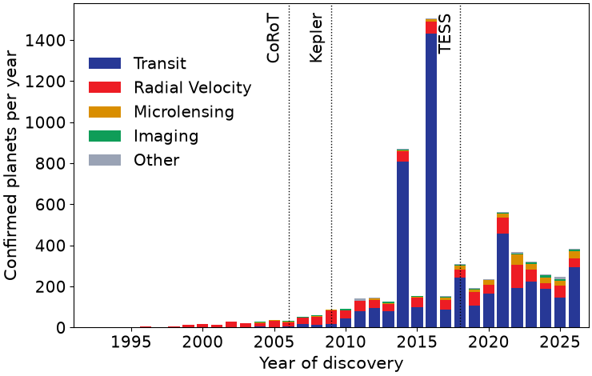
| Cơ sở | Hành tinh |
|---|---|
| Kepler | 2 787 |
| TESS | 1 027 |
| K2 | 550 |
| SuperWASP | 159 |
| HATNet | 67 |
| CoRoT | 35 |
| KELT | 21 |
| MEarth | 2 |
Hành tinh có cơ sở phát hiện được ghi trong archive.
3 Lịch sử. Các sứ mệnh không gian bằng con số: phóng, phần cứng và kết quả đầu tiên
| Sứ mệnh | Bắt đầu | Phần cứng | Kết quả | Bài báo, trang |
|---|---|---|---|---|
| CoRoT | Phóng 27/12/2006 | Quỹ đạo cực; do CNES chế tạo và vận hành | Hành tinh đầu tiên: CoRoT-Exo-1b (2008) | Auvergne 2009 tr. 1; Barge 2008 tr. 1 |
| Kepler | Phóng 6/3/2009 | Khẩu độ 0.95 m; quỹ đạo nhật tâm theo sau Trái Đất | 2 787 hành tinh trong archive | Koch 2010 tr. 2, tr. 5 |
| K2 | 2014 | Tàu Kepler sau khi mất hai bánh xe phản lực; các trường nhìn dọc mặt phẳng hoàng đạo | 550 hành tinh | Howell 2014 tr. 2, tr. 1 |
| TESS | Phóng 18/4/2018 | 4 camera, 24° × 96°; quỹ đạo 13.7 ngày | 1 027 hành tinh | Ricker 2015 tr. 8, tr. 7; trang NASA |
| CHEOPS | Phóng 18/12/2019 | Hành khách phụ trên tên lửa Soyuz-Fregat từ Kourou | Sứ mệnh nhỏ của ESA | Benz 2021 tr. 2 |
| PLATO | ESA chọn (M3) | Khảo sát trường rộng nhiều camera | Đang chuẩn bị | Rauer 2014 tr. 3 |
| JWST | Đài quan sát tại L2 | Hồng ngoại; transit của WASP-39 b bằng NIRCam ngày 22 đến 23/7/2022 | Các transit đầu tiên qua khí quyển | Gardner 2006 tr. 1; Ahrer 2023 tr. 2 |
Số hành tinh: NASA Exoplanet Archive theo cơ sở phát hiện. PLATO: được chọn năm 2014 (Rauer); chúng tôi chưa kiểm tra ngày phóng hiện tại.
3 Lịch sử. Mười hành tinh của chúng tôi được phát hiện ở đâu: sáu bằng Doppler hoặc khảo sát mặt đất, bốn bằng sứ mệnh không gian
Các số là số thứ tự hành tinh trong bộ slide này.
| Hành tinh | Cơ sở phát hiện | Năm |
|---|---|---|
| 1 HD 118203 b | Haute-Provence (RV) | 2005 |
| 2 HD 189733 b | Haute-Provence (RV) | 2005 |
| 3 HD 209458 b | Keck (RV) | 1999 |
| 4 WASP-18 b | SuperWASP | 2009 |
| 5 WASP-62 b | SuperWASP | 2012 |
| 6 LTT 9779 b | TESS | 2020 |
| 7 TOI-270 c | TESS | 2019 |
| 8 LTT 1445 A b | TESS | 2019 |
| 9 GJ 1132 b | MEarth-South, CTIO | 2015 |
| 10 K2-141 b | K2 | 2018 |
Phương pháp và cơ sở theo ghi nhận của NASA archive. HD 189733 b được ghi là phát hiện bằng Doppler; bài báo 2005 của nó báo cáo transit.
3 Phương pháp. TESS tự làm, TESS cùng đối tác, TESS không làm được: mọi cách archive ghi nhận một phát hiện
TESS tự làm
Ứng viên transit (4 800 hành tinh trong archive được tìm bằng transit, bởi mọi sứ mệnh) · đường cong pha và nhật thực thứ cấp (9 hành tinh bằng điều biến độ sáng) · một phần các phép kiểm tra dương tính giả · địa chấn học sao chủ · sao đôi, sao bùng nổ, nova, sao biến quang trong ảnh toàn khung
TESS cùng đối tác
Khối lượng (vận tốc xuyên tâm, 1 204 hành tinh) · xác nhận và sao đồng hành (quang đo mặt đất, chụp ảnh) · thời điểm transit (29 hành tinh), thời điểm nhật thực (17) · khí quyển (JWST, HST) · bán kính sao (Gaia) · transit tinh chỉnh (CHEOPS)
TESS không làm được
Chính vận tốc xuyên tâm · chụp ảnh trực tiếp (99) · thấu kính vi mô (296) · đo vị trí sao (8) · định thời pulsar (8) · động học đĩa (1) · hành tinh chu kỳ dài quanh sao giống Mặt Trời trong một sector · khối lượng và phổ nếu đứng một mình
Số liệu: các hành tinh đã xác nhận của NASA Exoplanet Archive theo phương pháp phát hiện, 2026-11-21; phần kết luận là của chúng tôi, bằng chứng nằm ở ba slide kế tiếp.
3 Phương pháp. TESS tự làm được: transit, đường cong pha, một phần kiểm định, các ngôi sao
| Phương pháp | TESS đo gì | Bằng chứng | Trong dự án của chúng tôi |
|---|---|---|---|
| Quang đo transit | các dip trong ánh sáng của một ngôi sao, 2 phút | SPOC gắn cờ các sự kiện vượt ngưỡng; Ricker Mục 8.2 kỳ vọng hàng nghìn hành tinh nhỏ hơn Hải Vương (tr. 12) | cả mười hành tinh: BLS và khớp mô hình |
| Đường cong pha, nhật thực thứ cấp | ánh sáng của chính hành tinh trong một vòng quỹ đạo | Shporer 2019: đường cong pha TESS của WASP-18 b có transit và nhật thực thứ cấp (tr. 1) | thông lượng WASP-18 b ở pha 0.5: 352 ± 9 ppm so với 341 |
| Các phép kiểm tra dương tính giả | nhật thực thứ cấp, điều biến hình elip, dịch chuyển ảnh | Ricker Mục 8.2: một số dương tính giả nhận ra được chỉ bằng dữ liệu TESS (tr. 12) | đã làm phép thử lẻ-chẵn; chưa làm kiểm tra tâm sáng |
| Địa chấn học sao | dao động của sao chủ | Ricker Mục 8.3: các p-mode ở khoảng 6 000 ngôi sao (tr. 12) | chưa làm; bán kính sao chiếm 1 đến 7 % sai số của chúng tôi |
| Các ngôi sao trong ảnh toàn khung | sao đôi, nova, sao bùng nổ, sao biến quang | Ricker Sec 8.4 (p. 14) | chưa làm |
Phát hiện một ứng viên chưa phải xác nhận một hành tinh: xác nhận cần các đối tác ở slide kế tiếp.
3 Phương pháp. TESS cùng đối tác: khối lượng, xác nhận, thời điểm, khí quyển, bán kính sao
| Nhu cầu | Đối tác | Bằng chứng | Trong dự án của chúng tôi |
|---|---|---|---|
| Khối lượng hành tinh | vận tốc xuyên tâm từ các máy quang phổ | Winters 2021: vận tốc từ năm máy quang phổ cho khối lượng LTT 1445 (tr. 2) | đồ thị khối lượng-bán kính đặt 4 hành tinh nhỏ có khối lượng đo được |
| Xác nhận, dương tính giả | quang đo mặt đất, quang phổ, ảnh phân giải cao | Ricker 8.2: mặt đất kiểm tra phổ, vận tốc, màu, sao đồng hành (tr. 12); LTT 1445 A b: TESS và kính mặt đất (tr. 3) | cả mười đều là hành tinh đã xác nhận; chúng tôi không tự kiểm định |
| Thời điểm transit | thời điểm mọi transit; đối tác: nhiều năm hơn hoặc vận tốc | Günther 2019: TOI-270 gần cộng hưởng nên có biến thiên thời điểm (tr. 2) | chưa đo; khoảng chênh chu kỳ của TOI-270 c chưa kiểm |
| Khí quyển | JWST, HST | Ricker: các cực hoàng đạo tốt nhất cho JWST (tr. 1); Pass 2023 (HST), Xue 2024 (JWST) | slide lịch sử: JWST quan sát WASP-39 b |
| Bán kính sao và khoảng cách | thị sai Gaia | TIC dựng trên Gaia DR2 (HEASARC); Stassun 2017: bán kính từ thị sai Gaia | R★ của archive đi vào mọi Rp |
| Transit tinh chỉnh | CHEOPS, mặt đất | Benz 2021: CHEOPS theo dõi các sao đã biết có hành tinh (tr. 2) | không dùng |
TESS cho bán kính và thời điểm transit; đối tác cho phần còn lại.
3 Phương pháp. TESS không làm được: vận tốc, chụp ảnh, thấu kính vi mô, đo vị trí, chu kỳ dài
| Phương pháp | Nó cần gì | Vì sao TESS không làm được (bằng chứng) | Trong dự án của chúng tôi |
|---|---|---|---|
| Vận tốc xuyên tâm | một máy quang phổ | tải trọng là bốn camera và một bộ xử lý dữ liệu (tr. 5); một dải, 600 đến 1000 nm | HD 118203 b, HD 189733 b, HD 209458 b được tìm ra bằng Doppler trước |
| Chụp ảnh trực tiếp | một coronagraph, pixel nhỏ | một pixel là 21″; 90 % ánh sáng của một sao rơi trong 1.4′; ảnh bị lấy mẫu thiếu (tr. 5) | – |
| Thấu kính vi mô | một trường đông sao được theo dõi để chờ một lần thẳng hàng hiếm | Tâm Ngân Hà ở vĩ độ hoàng đạo -5.5° (tự tính); các dải bắt đầu từ 6° (tr. 9); trường đông sao (lập luận của chúng tôi) | – |
| Đo vị trí sao | vị trí chính xác dưới nhiều lần nhỏ hơn một pixel | một pixel là 21″; dao động của sao nhỏ hơn nhiều (lập luận của chúng tôi); Gaia làm việc này | – |
| Định thời pulsar, động học đĩa | xung vô tuyến; phổ milimét | TESS là máy đo độ sáng quang học (lập luận của chúng tôi) | – |
| Chu kỳ dài, sao giống Mặt Trời | nhiều hơn một sector | Pmax khoảng 10 ngày loại trừ vùng ở được của chúng (tr. 3); các khảo sát thiên về chu kỳ ngắn (tr. 3) | mười hành tinh của ta: P tới 6.13 ngày |
'Lập luận của chúng tôi' = dựa trên số liệu thiết bị, không phải câu trích. Một hành tinh không đi ngang sao thì không cho transit nào.
3 Phương pháp. “Stars in full frames” không phải phương pháp tìm hành tinh: nó đo gì, so với transit và chụp ảnh trực tiếp
| Mục | Target | Đại lượng đo | Dữ liệu đầu vào | Tìm được hành tinh? |
|---|---|---|---|---|
| Quang đo transit | một ngôi sao, 2 phút | vết lõm ánh sáng của sao khi hành tinh đi ngang qua | ảnh cắt nhỏ → đường cong ánh sáng 1 chiều | Có, gián tiếp |
| Chụp ảnh trực tiếp | chính hành tinh | photon từ chính hành tinh, ánh sáng sao bị triệt tiêu | ảnh có coronagraph, pixel nhỏ | Có, trực tiếp |
| Đo vị trí sao | vị trí của sao | độ lắc của vị trí sao so với các sao tham chiếu | chuỗi ảnh, tâm sáng dưới pixel | Có, nhưng TESS không làm được |
| Các ngôi sao trong ảnh toàn khung | mọi ngôi sao trong trường 24° × 96° | độ sáng của mọi ngôi sao: sao đôi, nova, sao bùng nổ, sao biến quang | chuỗi ảnh toàn khung | Không: khoa học về sao; nó còn mở rộng việc tìm transit |
3 Phương pháp. Một chuỗi ảnh, ba cách dùng: đo quang vi sai, đo tâm sáng, và hiệu chuẩn cho chụp ảnh
Đo quang vi sai
Thông lượng của sao giảm đi (Rp/R★)2 khi hành tinh đi ngang qua. TESS: làm được; đó là cả mười hành tinh của chúng tôi, 23 đến 170 điểm mỗi transit.
Centroiding
Vị trí (x, y) của sao dịch chuyển khi một sao lẫn trong khẩu độ bị tối đi, hoặc khi hành tinh kéo sao. TESS dùng nó như một phép kiểm tra (Ricker Mục 8.2: chuyển động ảnh đặc trưng cho transit). Chúng tôi đo được độ dịch tối đa 0.027″.
Hiệu chuẩn cho chụp ảnh
Coronagraph che sao; các khung ngắn không bão hòa của sao vẫn xác định được tâm sao để trừ quầng nhiễu xạ. TESS không có coronagraph.
3 Phương pháp. Gián tiếp và trực tiếp: bản chất, đại lượng đo, khó khăn lớn nhất, ai được tìm thấy, cho biết gì
| Criterion | Star in frames: transit, đo vị trí sao | Chụp ảnh trực tiếp |
|---|---|---|
| Bản chất vật lý | gián tiếp: hành tinh tác động lên sao (che, kéo) | trực tiếp: photon từ chính hành tinh |
| Đại lượng đo | tổng thông lượng hoặc tâm sáng của sao | một điểm sáng của hành tinh, sao bị triệt tiêu |
| Khó khăn lớn nhất | độ chính xác: 60 ppm mỗi giờ là mức nhiễu sàn được giả định (Ricker tr. 12) | độ tương phản: Sao Mộc ở 5.2 AU cho 2.5 × 10−9, Trái Đất ở 1 AU cho 5.5 × 10−10 (Ag = 0.3, của chúng tôi) |
| Ai được tìm thấy | hành tinh sát sao: các phát hiện của TESS có P trung vị = 5.7 d, a = 0.06 AU | hành tinh khí khổng lồ trẻ, ở xa: hành tinh chụp được có a trung vị = 151 AU |
| Cho biết gì | Rp/R★, chu kỳ, độ nghiêng; khối lượng chỉ khi có đối tác | phổ của chính hành tinh: nhiệt độ, thành phần, mây |
Số liệu archive: các hành tinh đã xác nhận, 2026-11-21 (data/raw/pscomppars_imaging_and_tess.csv); 1027 phát hiện của TESS, 99 hành tinh chụp được. Độ tương phản là số tính, không phải số trích dẫn.
3 Phương pháp. Một bộ camera, hai sản phẩm dữ liệu: ảnh cắt nhỏ mỗi 2 phút, ảnh toàn khung mỗi 30 phút, 10 phút, 200 s
| Sản phẩm | Giữ lại gì | Cadence | Dùng ở đây |
|---|---|---|---|
| Tệp pixel đích và đường cong ánh sáng | một ảnh cắt quanh mỗi ngôi sao chọn trước (khoảng 200 000) | 2 phút; 20 s từ sứ mệnh mở rộng đầu tiên | Có |
| Ảnh toàn khung | toàn bộ trường của mỗi camera | 30 phút (chu kỳ 1–2), 10 phút (3–4), 200 s (5+) | No |
Cùng một phần cứng
Bốn camera giống hệt nhau (Ricker tr. 5); mỗi camera gồm bốn CCD tạo thành 4096 × 4096 pixel (Ricker tr. 6). Các khung 2 s được cộng theo nhóm 60 thành chu kỳ lấy mẫu 2 phút (Ricker tr. 7). Không có camera chụp ảnh riêng.
Vì sao ảnh toàn khung quan trọng
Chúng mở rộng việc tìm transit tới mọi ngôi sao đủ sáng trong trường, dù có được chọn trước hay không (Ricker tr. 13); cho khoảng 106 vật thể mỗi ảnh và khoảng 20 triệu trong hai năm (Ricker tr. 14); và ứng viên tìm thấy ở đó có thể được lấy mẫu 2 phút về sau (Ricker tr. 13).
Chúng tôi không dùng chúng: cả mười hành tinh đã có đường cong ánh sáng SPOC 2 phút.
3 Phương pháp. Đánh dấu các phương pháp: những gì TESS tự làm đều khớp với cả bốn con số của nó
| Phương pháp | FOV | Pixel | Cadence | Revisit | Con số quyết định | |
|---|---|---|---|---|---|---|
| Quang đo transit | ✓ | ✓ | ✓ | ✓ | p ≈ 5 % (Ricker); 23–170 điểm mỗi transit | |
| Nhật thực thứ cấp, đường cong pha | ✓ | ✓ | ✓ | ✓ | WASP-18 b: 29 vòng quỹ đạo trong một sector | |
| Kiểm định dương tính giả | ✓ | ✓ | ✓ | ✓ | sai số tâm sáng khoảng 10−4 pixel, đã đo | |
| Địa chấn học sao | ✓ | ✓ | ✓ | ✓ | Nyquist 4 167 µHz, cao hơn νmax của Mặt Trời là 3090 | |
| Các ngôi sao trong ảnh toàn khung | ✓ | ✓ | ✓ | ✓ | khoảng 106 vật thể mỗi ảnh (Ricker) |
Bấm vào ô để làm mờ một dòng. Bốn con số: trường nhìn 24° × 96°, pixel 21″, chu kỳ lấy mẫu 2 phút (20 s, 200 s), một sector 27.4 ngày. Cách đọc là của chúng tôi; mỗi dòng có slide riêng.
3 Phương pháp. Đánh dấu các phương pháp: cần đối tác, và những gì TESS không làm được, kèm yếu tố không khớp
| Phương pháp | FOV | Pixel | Cadence | Revisit | Con số quyết định | |
|---|---|---|---|---|---|---|
| Khối lượng: vận tốc xuyên tâm | – | – | – | – | cần máy quang phổ; tải trọng chỉ là camera | |
| Xác nhận: chụp ảnh từ mặt đất | – | ✗ | – | – | pixel 21″; các sao đồng hành của LTT 1445 ở 5–7″ | |
| Thời điểm transit (TTV) | – | – | ✓ | ~ | thời điểm đo được; khối lượng cần một mô hình | |
| Atmospheres: JWST, HST | – | – | – | – | cần một phổ; chỉ có một dải sóng | |
| Bán kính sao: Gaia | – | – | – | – | một phép đo thị sai | |
| Chụp ảnh trực tiếp | – | ✗ | – | – | 0.1–5.5 mas so với pixel 21″ | |
| Đo vị trí sao | – | ✗ | – | – | độ lắc nhỏ hơn nhiều một pixel | |
| Thấu kính vi mô | ✗ | ✗ | – | ✗ | vùng phình ở ranh giới 6°; đông sao; không nhìn chằm chằm | |
| Định thời pulsar, động học đĩa | – | – | – | – | vô tuyến và milimét; TESS là thiết bị quang học | |
| Chu kỳ dài, sao giống Mặt Trời | – | – | – | ✗ | sector 27.4 ngày; Pmax khoảng 10 d (Ricker) |
✓ khớp, ✗ không khớp, ~ một phần, – không phải con số quyết định. Cách đọc của chúng tôi từ các số thiết bị.
3 Phương pháp. Đo quang transit và bốn con số: nhiều sao, pixel thô, điểm 2 phút, một sector 27 ngày
1 Trường nhìn
Cần: hàng trăm nghìn ngôi sao: xác suất hình học chỉ khoảng 5 % (Ricker tr. 4), ít nhất 500 sao cho mỗi siêu Trái Đất (Ricker tr. 4)
TESS: 24° × 96° = 2300 deg², ít nhất 200 000 mục tiêu
2 Độ phân giải không gian
Cần: không cần tách hành tinh khỏi sao, chỉ cần gom ánh sáng của sao
TESS: pixel 21″; khẩu độ của chúng tôi 13 đến 31 pixel; CROWDSAP thấp nhất 0.42
3 Độ phân giải thời gian
Cần: một điểm mỗi vài phút xuyên qua một vết lõm kéo dài nhiều giờ
TESS: transit 0.8 đến 5.7 h: 23 đến 170 điểm ở chu kỳ 2 phút
4 Thời gian quay lại
Cần: ít nhất hai transit để có chu kỳ
TESS: sector 27.4 d: 4.5 đến 98 transit cho P = 6.1 đến 0.28 d
3 Phương pháp. Đường cong pha và nhật thực thứ cấp cùng bốn con số: sao chủ sáng và nóng, một pixel, 2 phút, nhiều vòng quỹ đạo
1 Trường nhìn
Cần: một hành tinh hiếm: rất nóng, khổng lồ, sát sao, quanh sao sáng
TESS: 2300 deg² cho WASP-18 (T mag 8.8) và vài hệ tương tự
2 Độ phân giải không gian
Cần: sao và hành tinh trong cùng khẩu độ, lấy tổng thông lượng của cả hệ
TESS: khoảng cách 0.16 mas so với pixel 21″: luôn lẫn vào nhau, đúng như mong muốn
3 Độ phân giải thời gian
Cần: đủ điểm để gộp xuống mức vài chục ppm trên một vòng quỹ đạo 0.94 d
TESS: 2 phút cho 678 điểm mỗi vòng; chúng tôi đo được 352 ± 9 ppm ở pha 0.5
4 Thời gian quay lại
Cần: nhiều vòng quỹ đạo liên tiếp, không đứt đoạn ngày-đêm
TESS: 29 vòng trong 27.4 d, liên tục trừ khoảng trống khi truyền dữ liệu
3 Phương pháp. Kiểm định dương tính giả và bốn con số: sao lân cận, tâm sáng dưới pixel, lấy mẫu như nhau, đủ transit
1 Trường nhìn
Cần: các sao lân cận trong cùng trường để so sánh
TESS: ảnh cắt chứa sao đích và các sao lân cận; CROWDSAP cho biết có bao nhiêu
2 Độ phân giải không gian
Cần: vị trí tâm sáng dưới mức pixel
TESS: sai số tâm sáng 0.0010 đến 0.010″ mỗi hành tinh, đã đo
3 Độ phân giải thời gian
Cần: cùng cách lấy mẫu cho transit chẵn và lẻ
TESS: một chu kỳ 2 phút cho tất cả; phép kiểm lẻ-chẵn đã làm trên cả mười
4 Thời gian quay lại
Cần: vài transit cho mỗi loại chẵn/lẻ
TESS: 4 đến 84 transit mỗi hành tinh
3 Phương pháp. Địa chấn học sao và bốn con số: nhiều sao sáng, ánh sáng cả đĩa, 2 phút hoặc 20 s, quan sát dài liên tục
1 Trường nhìn
Cần: nhiều sao sáng ở mọi tuổi
TESS: dự kiến thấy p-mode trên khoảng 6 000 ngôi sao (Ricker tr. 12)
2 Độ phân giải không gian
Cần: chỉ cần tổng ánh sáng của sao
TESS: độ sáng tích phân cả đĩa: pixel 21″ không gây hại
3 Độ phân giải thời gian
Cần: tần số Nyquist cao hơn νmax của sao
TESS: 2 phút: 4 167 µHz; 20 s: 25 000; 30 phút: 278 (quá thấp cho sao giống Mặt Trời)
4 Thời gian quay lại
Cần: dữ liệu dài, không gián đoạn: độ phân giải tần số = 1/T
TESS: 27.4 d: 0.42 µHz; hơn 300 d gần các cực: dưới 0.039 µHz (Ricker tr. 11)
3 Phương pháp. “Stars in full frames” và bốn con số: một triệu vật thể mỗi ảnh, pixel thô ở vùng thưa sao, 30 phút đến 200 s
1 Trường nhìn
Cần: toàn bộ trường, không chọn trước
TESS: Ricker tr. 13: mọi ngôi sao đủ sáng trong 2300 deg²
2 Độ phân giải không gian
Cần: tách các sao khỏi láng giềng
TESS: 21″ dùng được ở vùng thưa sao; bị hạn chế ở vùng đông (lập luận của chúng tôi)
3 Độ phân giải thời gian
Cần: các sự kiện từ vài phút đến vài tuần: bùng nổ, che khuất, nova (lập luận của chúng tôi)
TESS: 30 phút, rồi 10 phút, rồi 200 s
4 Thời gian quay lại
Cần: ghi liên tục xuyên suốt mỗi sự kiện
TESS: 27.4 d mỗi sector, 2 năm cho cả bầu trời
3 Phương pháp. Dữ liệu đầu vào: từ khối ảnh I(x, y, t) đến đường cong ánh sáng F(t), với SAP và PDCSAP
| Kiểm tra trên các tệp của chúng tôi | Giá trị |
|---|---|
| trung vị PDCSAP / trung vị SAP so với CROWDSAP / FLFRCSAP, 20 tệp | khớp trong 0.34 % |
| LTT 1445 A b: đo được; C / f; dạng có C × f ở mẫu số | 0.434; 0.434; 1.033 |
Loại dữ liệu vào: khối ảnh 3 chiều (11 × 11 pixel mỗi ảnh cắt, hoặc 4096 × 4096 mỗi camera), nén thành chuỗi 1 chiều; sau đó f(t) = FPDCSAP / trung vị.
3 Phương pháp. Đo quang transit từng bước: gấp pha, tìm kiếm, khớp, rồi bán kính, hình học và mật độ sao
3 Phương pháp. Các số transit của mười hành tinh: xác suất, thời lượng, điểm mỗi transit, transit mỗi sector, mật độ
| Hành tinh | P (d) | R★/a | T14 (h) | Points | Transit mỗi sector | ρ★ từ phép khớp / catalog (g cm−3) |
|---|---|---|---|---|---|---|
| 1 HD 118203 b | 6.135 | 11.5 % | 5.66 | 170 | 4.5 | 0.33 / 0.21 |
| 2 HD 189733 b | 2.219 | 11.3 % | 1.82 | 54 | 12.4 | 2.70 / 2.64 |
| 3 HD 209458 b | 3.525 | 11.4 % | 3.06 | 92 | 7.8 | 1.02 / 1.03 |
| 4 WASP-18 b | 0.941 | 28.9 % | 2.19 | 66 | 29.1 | 0.88 / 0.80 |
| 5 WASP-62 b | 4.412 | 10.3 % | 3.78 | 114 | 6.2 | 0.90 / 0.84 |
| 6 LTT 9779 b | 0.792 | 25.7 % | 0.82 | 25 | 34.6 | 1.78 / 1.68 |
| 7 TOI-270 c | 5.660 | 3.6 % | 1.61 | 48 | 4.8 | 12.43 / 9.92 |
| 8 LTT 1445 A b | 5.359 | 3.5 % | 1.38 | 42 | 5.1 | 15.17 / 18.21 |
| 9 GJ 1132 b | 1.629 | 6.1 % | 0.77 | 23 | 16.8 | 31.03 / 25.37 |
| 10 K2-141 b | 0.280 | 47.2 % | 0.99 | 30 | 97.7 | 2.28 / 3.16 |
R★/a = 1/(a/R★) của phép khớp. T14 từ phép khớp theo công thức chính xác; số điểm = T14/120 s; mật độ từ phép khớp và từ catalog M★/R★3 (mật độ Mặt Trời 1.41).
3 Phương pháp. Đường cong pha và nhật thực thứ cấp từng bước, với WASP-18 b: ánh sáng phản xạ, ánh sáng nhiệt, nhiệt độ mặt ban ngày
| WASP-18 b | Giá trị |
|---|---|
| k = 0.0986, a/R★ = 3.455, Teff = 6432 K | (Rp/a)2 = 814 ppm |
| nếu toàn bộ 341 ppm là ánh sáng phản xạ thì cần Ag | 0.42, nhưng giới hạn của Shporer: < 0.048 (Shporer tr. 1) |
| Tday từ 341 ppm (bài báo) | 352 ppm (của chúng tôi) | 3002 K | 3018 K |
3 Phương pháp. Kiểm định dương tính giả từng bước: độ sâu lẻ-chẵn, tín hiệu elip và beaming, dịch tâm sáng
Phép kiểm tra tâm sáng là phép mà phiên bản đầu của bộ slide này ghi là chưa làm; nó đã được làm trên tâm sáng SPOC của mười hành tinh (slide kế tiếp).
3 Phương pháp. Kết quả kiểm định của mười hành tinh: lẻ-chẵn tính bằng sigma, và độ dịch tâm sáng tính bằng 10−3 pixel và giây cung
| Hành tinh | Lẻ-chẵn (σ, có β) | CROWDSAP | Số transit | ΔRc (10−3 px) | ΔRc (″) | |Độ dịch|/sai số lớn nhất |
|---|---|---|---|---|---|---|
| 1 HD 118203 b | -1.6 | 1.00 | 6 | 0.20 | 0.004 | 1.0 |
| 2 HD 189733 b | +2.1 | 0.98 | 11 | 1.27 | 0.027 | 8.8 |
| 3 HD 209458 b | -5.0 | 1.00 | 8 | 0.11 | 0.002 | 1.0 |
| 4 WASP-18 b | -3.6 | 0.99 | 84 | 0.08 | 0.002 | 1.8 |
| 5 WASP-62 b | -1.9 | 0.98 | 18 | 0.10 | 0.002 | 0.5 |
| 6 LTT 9779 b | +1.0 | 0.99 | 33 | 0.32 | 0.007 | 1.7 |
| 7 TOI-270 c | +1.1 | 0.97 | 11 | 0.24 | 0.005 | 0.9 |
| 8 LTT 1445 A b | -0.1 | 0.42 | 4 | 0.30 | 0.006 | 1.2 |
| 9 GJ 1132 b | +0.4 | 0.88 | 26 | 0.37 | 0.008 | 2.3 |
| 10 K2-141 b | +0.5 | 1.00 | 56 | 0.09 | 0.002 | 0.6 |
ΔRc: tâm sáng trung bình trong transit trừ tâm sáng ngoài transit tại chỗ (MOM_CENTR1, 2) trên các transit đã dùng; cột cuối dùng sai số nhiễu trắng. HD 189733 b (8.8) là hành tinh duy nhất vượt 3; độ dịch được kỳ vọng khi CROWDSAP nhỏ hơn 1, và chúng tôi không diễn giải thêm.
3 Phương pháp. Địa chấn học sao từng bước: phổ công suất, νmax và Δν, rồi bán kính và khối lượng sao
Chúng tôi chưa làm; đây là đường tới bán kính sao không phụ thuộc Gaia, sẽ thu hẹp sai số bán kính 1 đến 7 % của mười hành tinh.
3 Phương pháp. “Stars in full frames” từng bước: trừ ảnh vi sai, năng lượng bùng nổ, chu kỳ sao biến quang
Ghi chú checkpoint viết năng lượng bùng nổ là 4πd2L × tích phân; tích phân đã là một khoảng thời gian, nên E = L × thời lượng tương đương.
3 Phương pháp. Chụp ảnh trực tiếp, hình học: cả mười hành tinh nằm trong 0.03 % của một pixel TESS tính từ sao của chúng

Trong một pixel
- lớn nhất: LTT 1445 A b, 5.5 mas = 0.026 % của một pixel
- Sao Mộc ở 5.2 AU, sao ở 10 pc: 0.52″ = 2.5 % pixel; HR 8799 b: 68 AU ở 39.4 pc = 1.7″ (Marois tr. 4)
3 Phương pháp. Chụp ảnh trực tiếp, PSF và độ tương phản: quầng sáng của sao, độ mờ của hành tinh, và không có coronagraph
PSF
50 % ánh sáng nằm trong một pixel, 90 % trong 4 × 4 pixel = 1.4′ (Ricker tr. 7): một hành tinh trong vòng 40″ nằm trong quầng sáng của sao. Giới hạn nhiễu xạ của thấu kính 10.5 cm: 1.9″ ở 800 nm, nên PSF rộng là do thiết kế.
Contrast
Ánh sáng phản xạ là Ag(Rp/a)2: Sao Mộc ở 5.2 AU cho 2.5 × 10−9, Trái Đất ở 1 AU cho 5.5 × 10−10 (Ag = 0.3, của chúng tôi). Mười hành tinh nóng của chúng tôi: 7.2 × 10−7 đến 2.7 × 10−4, nhưng quá sát để tách ra.
Không có coronagraph
Tải trọng: bốn camera và một bộ xử lý dữ liệu (Ricker tr. 5). JWST dùng coronagraph ở 2.7 và 4.44 µm (Gardner tr. 47). Chụp ảnh khó vì khoảng cách nhỏ và độ tương phản lớn cùng lúc (Marois tr. 1).
3 Phương pháp. Chụp ảnh trực tiếp, bước sóng: TESS thấy ánh sáng phản xạ ở 0.6–1 µm, hành tinh khí khổng lồ trẻ phát sáng ở 2–20 µm

Vì sao dùng hồng ngoại
- hành tinh 1000 K cỡ Sao Mộc quanh sao giống Mặt Trời: độ tương phản 3.5 × 10−9 ở 0.8 µm, 2.0 × 10−5 ở 2 µm, 3.2 × 10−4 ở 4.4 µm (Planck, của chúng tôi)
3 Phương pháp. Chụp ảnh trực tiếp, bao nhiêu độ phân giải là đủ: pixel 0.005″ đến 3.5″ và gương 0.4 đến 22 m
| a \ d | 10 pc | 20 pc | 50 pc | 100 pc |
|---|---|---|---|---|
| 1 AU | 0.10″ | 0.05″ | 0.02″ | 0.01″ |
| 5 AU | 0.50″ | 0.25″ | 0.10″ | 0.05″ |
| 10 AU | 1.00″ | 0.50″ | 0.20″ | 0.10″ |
| 30 AU | 3.00″ | 1.50″ | 0.60″ | 0.30″ |
| 70 AU | 7.00″ | 3.50″ | 1.40″ | 0.70″ |
Separation θ = a/d.
| θ cần thiết | 0.8 µm | 1.6 µm | 4.4 µm |
|---|---|---|---|
| 0.05″ | 4.0 m | 8.1 m | 22.1 m |
| 0.1″ | 2.0 m | 4.0 m | 11.1 m |
| 0.5″ | 0.4 m | 0.8 m | 2.2 m |
Mirror D = 1.22 λ/θ. TESS: 0.105 m.
3 Phương pháp. Độ phân giải không gian so với thời gian: đánh đổi nằm ở trường nhìn, không ở chu kỳ lấy mẫu
Pixel cố định: FOV = N × scale2
TESS: 4 × 40962 pixel × (21″)2 = 2 284 deg² (số trích dẫn 2300). JWST NIRCam, một module: 0.0012 deg². Tỉ số 1 835 588. Pixel mịn hơn 10 lần nghĩa là bầu trời hẹp đi 100 lần.
Chu kỳ lấy mẫu trên mục tiêu
Khi kính đã nhìn chằm chằm một ngôi sao, nó có thể đọc nhanh. Hành tinh mờ đến mức photon đến chậm, nên ảnh khoa học cần phơi sáng lâu (lập luận của chúng tôi): hàng giờ tích lũy, không phải tốc độ khung nhanh hơn.
Cái giá phải trả
Một trường hẹp chụp từng sao một: tốc độ khảo sát bầu trời giảm theo tỉ số trường, hàng triệu lần. Máy dò tốt hơn không xóa được sự đánh đổi này: etendue, diện tích nhân trường, được bảo toàn (lập luận của chúng tôi).
3 Phương pháp. Chụp ảnh trực tiếp có cần TESS không? Chỉ cho các ngôi sao và khí quyển, không cho hành tinh: hai quần thể hầu như không chồng nhau
| Phát hiện của TESS | Hành tinh chụp được ảnh | |
|---|---|---|
| Số lượng trong archive | 1 027 | 99 |
| Bán trục lớn trung vị | 0.060 AU | 151 AU |
| Middle 80 % of a | 0.02 to 0.19 AU | 13 to 1 965 AU |
| Chu kỳ trung vị | 5.7 d | 90 yr |
| Ở phía bên kia ranh giới 1 AU | 2 hành tinh có a > 1 AU | 1 hành tinh có a < 1 AU |
Chụp ảnh dùng gì
Các sao trẻ, ở gần, chẳng hạn trong các nhóm chuyển động chung (Bowler tr. 3), với vị trí từ các catalog như Gaia; không phải một bản đồ do TESS làm ra.
TESS giúp được ở đâu
Khí quyển: các cực hoàng đạo là nơi tốt nhất cho quan sát tiếp theo bằng JWST (Ricker tr. 1); catalog đầu vào của TESS được dựng trên Gaia DR2.
4 TESS. Vệ tinh qua chín con số
| Đại lượng | Giá trị thiết kế | Ở đâu |
|---|---|---|
| Quỹ đạo | Elip, 13.7 ngày, cộng hưởng 2:1 với Mặt Trăng; cách Trái Đất 17 đến 59 bán kính Trái Đất | Mục 3.8, 6 |
| Camera | 4 thấu kính giống nhau, f/1.4, đường kính pupil 10.5 cm; dải sóng 600 đến 1000 nm | Bảng 1 |
| Bộ cảm biến | 4 CCD mỗi camera, 2048 × 2048 pixel kích thước 15 µm | Mục 4.2 |
| Trường nhìn | 24° × 24° mỗi camera; cả bốn là 24° × 96° = 2300 deg² | Bảng 1 |
| Một pixel | 0.35′ = 21″ = 0.0058° | Bảng 1 |
| Ánh sáng trong một pixel | 50 % nằm trong một pixel; 90 % nằm trong 4 × 4 pixel (1.4′) | Bảng 1 |
| Một sector | 2 vòng quỹ đạo = 27.4 ngày, rồi các camera quay sang trường kế tiếp; 13 sector mỗi bán cầu | Mục 7.2 |
| Lấy mẫu | Khung 2 s; 60 khung được cộng thành một cadence 2 phút cho các sao chọn sẵn; ảnh toàn khung mỗi 30 phút | Mục 3.7, 4.3 |
| Mục tiêu | Ít nhất 200 000 sao ở cadence 2 phút, IC khoảng 4 đến 13 | Tóm tắt |
Giá trị thiết kế từ Ricker et al. 2015. Các slide sau kiểm chúng trên 21 file SPOC của chúng tôi.
4 TESS. Nó nhìn đâu: 13 sector mỗi bán cầu, mỗi sector 27.4 ngày
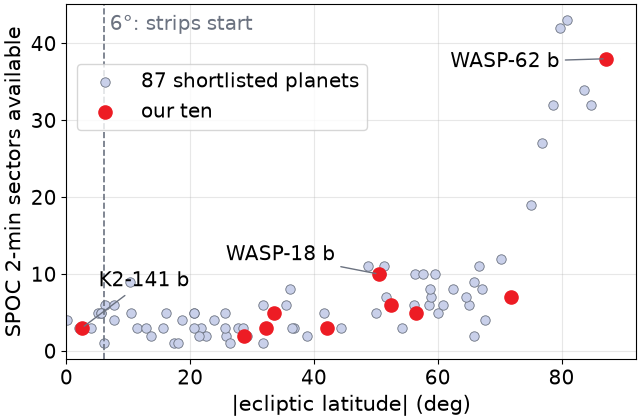
Vùng phủ bầu trời (thiết kế)
- bốn camera xếp thành hàng: 24° × 96° = 2300 deg², từ vĩ độ hoàng đạo 6° tới cực
- mỗi sector: 2 vòng quỹ đạo = 27.4 ngày, rồi dịch 27° về phía đông; một bán cầu trong 1 năm, cả bầu trời trong 2 năm
- quan sát ít nhất 27 ngày: 30 000 deg² (73 % mặt cầu, tự tính); trên 80 ngày: 2 800 deg²; trên 300 ngày: 900 deg² gần các cực
4 TESS. Lấy mẫu: một điểm mỗi 2 phút, sector khoảng 27 ngày, khoảng trống 1 đến 8 ngày

Đo trên các file của chúng tôi
- cả 21 file: cadence 120 s = 60 khung 2 s; thời gian phơi sáng hiệu dụng 95 s (header DEADC 0.792)
- độ dài sector 24.6 đến 28.4 ngày (trung vị 26.6)
- khoảng trống lớn nhất 1.1 đến 7.7 ngày (trung vị 2.2); cadence tốt chiếm 63 đến 96 % khoảng thời gian (trung vị 81)
- một transit kéo dài 0.4 đến 5.6 giờ = 11 đến 169 cadence
4 TESS. Sản phẩm dữ liệu: đường cong ánh sáng 2 phút từ đầu; ảnh toàn khung mỗi 30 phút, rồi 10 phút, rồi 200 s
| Sản phẩm | Cadence | Có từ | Dùng ở đây |
|---|---|---|---|
| Đường cong ánh sáng SPOC, pixel mục tiêu | 120 s | Từ sector 1 | Có: cả 21 file (thông lượng PDCSAP) |
| Đường cong ánh sáng SPOC nhanh | 20 s | Sứ mệnh mở rộng đầu tiên, từ sector 27 | No |
| Ảnh toàn khung | 30 phút | Năm 1 và 2 (sector 1 đến 26) | No |
| Ảnh toàn khung | 10 phút | Năm 3 và 4 (sector 27 đến 55) | No |
| Ảnh toàn khung | 200 s | Từ năm 5 (sector 56 trở đi) | No |
Các file của chúng tôi
16 sector: 1, 2, 3, 4, 5, 9, 10, 15, 16, 41, 42, 56, 103, 104, 105, 106. Quan sát đầu tiên 2018-07-25, cuối cùng 2026-07-11: các năm 1, 2, 4, 5 và 8 của sứ mệnh.
Mốc thời gian
BTJD = BJDTDB − 2 457 000 ngày. Mỗi cadence là tổng của 60 khung; đơn vị thông lượng là e−/s.
4 TESS. Độ phân giải: một pixel là 21″ = 0.0058°, và 90 % ánh sáng của một sao rơi trong 1.4′
| Đại lượng | Giá trị | Nguồn |
|---|---|---|
| Một pixel | 15 µm = 0.35′ = 21″ = 0.0058° (171 pixel mỗi độ) | WCS trong các file của chúng tôi: 19.1 đến 21.1″ |
| Một camera | 2 × 2 CCD mỗi CCD 2048 pixel = 4096 pixel = 23.9° | tự tính; bài báo nêu 24° |
| Một nửa ánh sáng của sao | nằm trong một pixel (21″) | Ricker et al. 2015, Bảng 1 |
| 90 % ánh sáng | nằm trong 4 × 4 pixel (84″ = 1.4′) | ảnh bị lấy mẫu thiếu (undersampled) |
| Một pixel trên bầu trời | 21″ × khoảng cách: 140 AU tại LTT 1445 A (6.9 pc) đến 3 710 AU tại WASP-62 (176 pc) | khoảng cách trong catalog |
| Khẩu độ của chúng tôi | 13 đến 31 pixel = bán kính tương đương 41 đến 64″ | đo trên các file của chúng tôi |
Bán kính tương đương là sqrt(N/π) pixel với N pixel của khẩu độ tối ưu.
4 TESS. Mười khẩu độ của chúng tôi: LTT 1445 A b chỉ có 42 % ánh sáng đến từ sao mục tiêu

4 TESS. Độ chính xác: 67 đến 477 ppm mỗi giờ, và 11 đến 169 điểm mỗi transit
| Hành tinh | Cấp sao T | Cam | Sector | Px / r | CROWD | CDPP 1h | Transit / n | Độ sâu |
|---|---|---|---|---|---|---|---|---|
| 1 HD 118203 b | 7.5 | 4 | 2 of 5 | 25 / 59″ | 1.00 | 113 | 5.6 h / 169 | 3054 |
| 2 HD 189733 b | 6.8 | 1 | 1 of 3 | 23 / 56″ | 0.98 | 67 | 1.8 h / 55 | 23752 |
| 3 HD 209458 b | 7.1 | 1 | 1 of 2 | 23 / 53″ | 1.00 | 79 | 3.1 h / 92 | 14699 |
| 4 WASP-18 b | 8.8 | 2 3 4 | 4 of 10 | 23 / 56″ | 0.99 | 168 | 2.2 h / 66 | 9716 |
| 5 WASP-62 b | 9.7 | 4 | 4 of 38 | 17 / 49″ | 0.98 | 203 | 3.8 h / 114 | 12196 |
| 6 LTT 9779 b | 9.1 | 2 | 1 of 5 | 22 / 55″ | 0.99 | 189 | 0.4 h / 11 | 1932 |
| 7 TOI-270 c | 10.5 | 3 | 3 of 7 | 13 / 42″ | 0.97 | 334 | 1.7 h / 50 | 3305 |
| 8 LTT 1445 A b | 8.8 | 2 | 1 of 3 | 31 / 64″ | 0.42 | 332 | 1.4 h / 41 | 2208 |
| 9 GJ 1132 b | 10.8 | 2 | 2 of 6 | 13 / 41″ | 0.88 | 477 | 0.8 h / 23 | 2244 |
| 10 K2-141 b | 10.0 | 2 | 1 of 3 | 14 / 43″ | 1.00 | 325 | 0.9 h / 28 | 355 |
CDPP 1 h: độ chính xác quang đo trên 1 giờ (ppm). Cam: camera. Sector: dùng/có. Px / r: số pixel và bán kính khẩu độ. CROWD: CROWDSAP thấp nhất. Transit / n: thời lượng, số cadence. Độ sâu: (Rp/R★)² (ppm).
4 TESS. Nó bay đi đâu: quỹ đạo 13.7 ngày giữa 17 và 59 bán kính Trái Đất

Đường đi và quỹ đạo
- phóng từ Cape Canaveral vào quỹ đạo đỗ (28.5°); hai lần đốt nâng viễn điểm lên 400 000 km; một lần bay qua Mặt Trăng nâng độ nghiêng so với hoàng đạo lên khoảng 40°; quỹ đạo cuối đạt được khoảng 60 ngày sau khi phóng (kịch bản danh định)
- quỹ đạo cuối: 17 đến 59 R⊕, 13.7 ngày, 2:1 với Mặt Trăng; định luật Kepler thứ ba với a = 38 R⊕ cho 13.7 ngày (tự tính)
- dữ liệu: tải xuống mỗi 13.7 ngày ở cận điểm, 4 giờ ở 100 Mb/s; rồi các camera chuyển hướng
- vì sao chọn quỹ đạo này: nằm ngoài các vành đai bức xạ, không bị Trái Đất hay Mặt Trăng che khuất lâu, ổn định hàng thập kỷ mà không cần giữ quỹ đạo
4 TESS. Ai phóng và tốn bao nhiêu: SpaceX, khoảng 87 triệu USD riêng cho việc phóng
| Câu hỏi | Trả lời | Nguồn |
|---|---|---|
| Ai điều hành | MIT dẫn dắt sứ mệnh; Explorers Program tại NASA Goddard giám sát; Launch Services Program của NASA (Kennedy) quản lý việc phóng | Thông cáo NASA C14-049 |
| Ai phóng | SpaceX, Falcon 9, từ Cape Canaveral AFS ngày 18/4/2018 lúc 6:51 chiều giờ EDT. NASA chọn SpaceX ngày 16/12/2014 (Falcon 9 v1.1, khi đó dự kiến phóng tháng 8/2017) | Thông cáo NASA; MIT News |
| Chi phí phóng | Khoảng 87 triệu USD cho NASA: dịch vụ phóng, xử lý tàu, tích hợp tải trọng, theo dõi, dữ liệu và đo xa | Thông cáo NASA C14-049 |
2006
20 triệu USD: đề xuất đầu tiên, vốn tư nhân (MIT)
2006 to 2008
120 triệu USD: đề xuất gửi NASA (MIT)
12/2014
87 triệu USD: riêng việc phóng (NASA)
4/2018
337 triệu USD: tổng được báo (Physics World)
4 TESS. Việt Nam có thể phóng một TESS không? Không bằng tên lửa riêng, nhưng có thể mua một chuyến phóng
Bằng chứng (có nguồn)
- VNREDSat-1 bay trên tên lửa Vega từ Guiana thuộc Pháp ngày 7/5/2013; cả chương trình tốn 55.8 triệu EUR
- LOTUSat-1 (570 kg) tháng 7/2024 đang ‘chờ tên lửa của Nhật’; cơ sở cho vệ tinh dưới 180 kg dự kiến xong tháng 12/2025
- Tháng 8/2026 VinSpace chọn chuyến rideshare Transporter của SpaceX cho các vệ tinh đầu tiên, vào quý 2/2027
- TESS: 87 triệu USD riêng cho việc phóng
Lập luận của chúng tôi
- Lên điểm xa 400 000 km từ quỹ đạo tròn 300 km cần Δv = 3.1 km/s ngoài 7.7 km/s sẵn có: cần tên lửa lớn, không phải tên lửa nhỏ (tự tính)
- Vĩ độ không phải rào cản: 8.6° N cho 460 m/s từ sự quay của Trái Đất so với 409 tại Cape Canaveral, +51 m/s, tức 0.7 % tốc độ quỹ đạo (tự tính)
- Chúng tôi không thấy báo cáo nào về tên lửa quỹ đạo hay bãi phóng của Việt Nam (một lần tìm web)
- Thực tế: mua một chuyến phóng, đi nhờ như hành khách phụ (CHEOPS đã làm vậy), hoặc xây kính thiên văn robot mặt đất đo transit (MEarth đã tìm ra GJ 1132 b)
Nhận định, không phải nguồn: một sứ mệnh cỡ TESS tự phóng là chưa thực tế trong thời gian tới; các phép tính của chúng tôi dùng hằng số chuẩn (code/28_orbit_figure.py).
4 TESS. Mỗi con số thiết kế đến từ đâu: bài về thiết bị, mục và trang PDF
| Điều khẳng định | Giá trị | Ở đâu | Trang PDF |
|---|---|---|---|
| Quỹ đạo elip quanh Trái Đất | cận điểm 17 R E, viễn điểm 59 R E | Ricker 2015, Mục 6 | p. 8 |
| Chu kỳ và cộng hưởng với Mặt Trăng | 13.7 ngày, 2:1 với quỹ đạo Mặt Trăng | Ricker 2015, Mục 6 | p. 8 |
| Phóng và quỹ đạo đầu tiên (kịch bản danh định) | Cape Canaveral, quỹ đạo đỗ 28.5 độ | Ricker 2015, Mục 6, Hình 5 | p. 8 |
| Bay qua Mặt Trăng nâng độ nghiêng so với hoàng đạo | lên khoảng 40 độ | Ricker 2015, Mục 6 | p. 8 |
| Nhịp tải dữ liệu | mỗi 13.7 ngày ở cận điểm | Ricker 2015, Mục 4.3 | p. 7 |
| Trường nhìn | 24 x 24 độ mỗi camera; 24 x 96 độ = 2300 độ vuông | Ricker 2015, Bảng 1 | p. 7 |
| Kích thước pixel và PSF | 15 micron = 0.35 phút cung | Ricker 2015, Mục 4.1 | p. 5 |
| Ánh sáng trong 4 x 4 pixel | 90 % trong 4 x 4 pixel = 1.4 phút cung | Ricker 2015, Bảng 1 | p. 7 |
| Một sector kéo dài hai vòng quỹ đạo | 27.4 ngày, trục ngắm gần ngược hướng Mặt Trời | Ricker 2015, Mục 7.2 | p. 9 |
| Diện tích được quan sát ít nhất 27 ngày | 30 000 độ vuông | Ricker 2015, Mục 7.2 | p. 11 |
| Cadence 2 phút | 60 khung 2 s được cộng lại | Ricker 2015, Mục 4.3 | p. 7 |
Số trang PDF của arXiv:1406.0151v3. Mỗi đoạn trích đã được kiểm trong data/literature/tess_fact_sources.csv.
4 TESS. Các trang web đã dùng, lưu ngày 21/11/2026
| Nguồn | Địa chỉ | Dùng cho |
|---|---|---|
| MIT News, TESS takes off | science.mit.edu/tess-takes-off | Phương tiện, bãi phóng và thời điểm phóng |
| Thông cáo hợp đồng NASA C14-049 | www.nasa.gov/news-release/nasa-awards-launch-services-contract-for-t… | Tổng chi phí NASA trả cho việc phóng |
| Physics World, 19/4/2018 | physicsworld.com/a/nasa-launches-tess-exoplanet-mission/ | Tổng chi phí sứ mệnh theo báo cáo (nguồn thứ cấp) |
| STScI MAST, trang sứ mệnh TESS | archive.stsci.edu/missions-and-data/tess | Thang pixel trên trang archive |
| NASA HEASARC, sản phẩm dữ liệu TESS | heasarc.gsfc.nasa.gov/docs/tess/data-products.html | Cadence ảnh toàn khung theo chu kỳ (cycle) |
| Báo điện tử của Chính phủ Việt Nam | en.baochinhphu.vn/vns-first-remote-sensing-satellite-launched-111166… | VNREDSat-1 được phóng ở nước ngoài |
| VietnamNet Global, 15/7/2024 | vietnamnet.vn/en/vietnam-prepares-for-lotusat-1-satellite-launch-wit… | LOTUSat-1 chờ tên lửa của Nhật |
| Al Jazeera, 11/8/2026 | aljazeera.com/economy/2026/8/11/vietnams-vinspace-announces-deal-wit… | Chuyến phóng năm 2027 của Việt Nam là rideshare của SpaceX |
Bản sao trong data/raw/tess_docs/; mỗi cụm trích đã được tìm thấy trong trang đã lưu.
4 TESS. Đã phóng gì: một vệ tinh, bốn camera, mười sáu CCD, một dải sóng
| Mục | Số lượng | Nguồn |
|---|---|---|
| Satellite | 1 vệ tinh, phóng ngày 18 tháng 4 năm 2018 bằng SpaceX Falcon 9 từ Cape Canaveral | NASA; MIT News |
| Camera | 4 camera giống hệt nhau; mỗi camera có 7 thấu kính, f/1.4, đồng tử 10.5 cm | Ricker p. 5 |
| CCDs | 16 (4 mỗi camera); mỗi camera là 4096 × 4096 pixel, cả vệ tinh 67.1 triệu pixel ảnh (tính) | Ricker p. 6 |
| Dải sóng | một dải, 600 đến 1000 nm: bộ lọc thông dài × đáp ứng của CCD | Ricker p. 4 |
| Sản phẩm dữ liệu | 2 loại ảnh (ảnh cắt nhỏ, ảnh toàn khung) và các đường cong ánh sáng, vector khử xu hướng suy ra từ chúng | Sổ tay STScI |
| Những thiết bị không có | không có máy quang phổ, không có coronagraph | Ricker p. 5 |
‘Có bao nhiêu loại vệ tinh?’ Một: TESS không phải chòm vệ tinh. Các sứ mệnh khác của dự án nằm ở slide kế tiếp.
4 Các sứ mệnh đằng sau mười hành tinh của chúng tôi: 4 tìm thấy từ không gian (TESS, K2), 6 từ mặt đất
| Hành tinh | Phát hiện bằng | Phương pháp | Năm | Platform |
|---|---|---|---|---|
| 1 HD 118203 b | Haute-Provence Observatory | Radial Velocity | 2005 | mặt đất |
| 2 HD 189733 b | Haute-Provence Observatory | Radial Velocity | 2005 | mặt đất |
| 3 HD 209458 b | W. M. Keck Observatory | Radial Velocity | 1999 | mặt đất |
| 4 WASP-18 b | SuperWASP | Transit | 2009 | mặt đất |
| 5 WASP-62 b | SuperWASP | Transit | 2012 | mặt đất |
| 6 LTT 9779 b | TESS | Transit | 2020 | không gian |
| 7 TOI-270 c | TESS | Transit | 2019 | không gian |
| 8 LTT 1445 A b | TESS | Transit | 2019 | không gian |
| 9 GJ 1132 b | Cerro Tololo Inter-American Observatory | Transit | 2015 | mặt đất |
| 10 K2-141 b | K2 | Transit | 2018 | không gian |
Từ NASA Exoplanet Archive, bảng pscomppars. Cả mười hành tinh được đo lại ở đây bằng đường cong ánh sáng SPOC của TESS. Các sứ mệnh khác trong bộ slide này: Kepler, CHEOPS, Gaia (thị sai làm nền cho catalog đầu vào của TESS), JWST và HST (khí quyển).
4 TESS. Dải sóng so với các sứ mệnh khác: một dải, 600 đến 1000 nm
4 TESS. Một pixel là 21″: nó suy ra từ quang học thế nào, và so với các sứ mệnh khác ra sao
| Sứ mệnh | Kích thước pixel | Mịn hơn TESS bao nhiêu lần | Nguồn |
|---|---|---|---|
| TESS | 21″ | 1 | Ricker p. 5 |
| Kepler | 3.98″ | 5.3 | Koch p. 16 |
| PLATO (thiết kế 2014) | 15″ | 1.4 | Rauer p. 41 |
| Gaia | 0.059″ × 0.177″ | 357 | Gaia p. 9 |
| Rubin | 0.2″ | 105 | Ivezic p. 17 |
| Roman WFI | 0.11″ | 191 | Akeson p. 13 |
| JWST NIRCam | 0.031″ và 0.063″ | 677 và 333 | STScI JDox |
4 TESS. Lưới khẩu độ là ảnh: ảnh cắt, mặt nạ, phép cộng, và độ đông đúc làm loãng transit
Là gì
Tệp pixel đích: ảnh 11 × 11 mỗi 2 phút. Lưới cho biết pixel nào được cộng.
Dùng để làm gì
Cộng các pixel đậm cho đường cong ánh sáng của sao; sao láng giềng trong mặt nạ làm vết lõm nông đi.
CROWDSAP cho biết gì
Tỉ lệ thông lượng mặt nạ từ sao đích: LTT 1445 A b 0.42. Bỏ qua thì Rp nhỏ đi √2.38 = 1.54 lần.
| Hành tinh | CROWDSAP | 1 / CROWDSAP | Độ sâu PDCSAP / độ sâu SAP (đo được) |
|---|---|---|---|
| 1 HD 118203 b | 1.000 | 1.00 | 0.99 |
| 7 TOI-270 c | 0.974 | 1.03 | 1.02 |
| 8 LTT 1445 A b | 0.420 | 2.38 | 2.32 |
| 9 GJ 1132 b | 0.879 | 1.14 | 1.09 |
4 Sau TESS. Đánh đổi của các kính tiếp theo: trường nhìn, pixel, chu kỳ lấy mẫu, thời gian quay lại
| Sứ mệnh | Trường nhìn | Pixel | Cadence | Revisit |
|---|---|---|---|---|
| TESS | 24° × 96° = 2300 deg² | 21″ | 120 s, 20 s; ảnh toàn khung 30 phút, 10 phút, 200 s | 27.4 d mỗi sector; 2 năm cho cả bầu trời |
| Kepler (tham chiếu) | 115 deg² | 3.98″ | 1765.8 s và 58.9 s | một trường, liên tục |
| PLATO (thiết kế 2014) | 2232 deg² | 15″ | 25 s và 2.5 s | quan sát dài; phóng: ESA, cuối 2026 |
| Roman | 0.281 deg² | 0.11″ | 15 phút (khảo sát vùng phình) | mùa 72 ngày; đã phóng 30/8/2026 |
| Rubin LSST | 9.6 deg² | 0.2″ | 30 s mỗi lượt quan sát | trung bình 3 d một lần |
| JWST NIRCam | vài arcmin² mỗi module | 0.031″ và 0.063″ | do người quan sát đặt | chỉ ngắm theo lịch, không tự lặp lại |
PLATO: 26 camera trên trang ESA năm 2026, 34 kính trong bài báo 2014; một mục khác của ESA nói đầu 2027, nên ngày phóng chưa chắc chắn ở đây.
4 Sau TESS. Quy luật sau bảng: FOV ∝ N × scale², nhìn chằm chằm và quét, SNR ∝ D√t
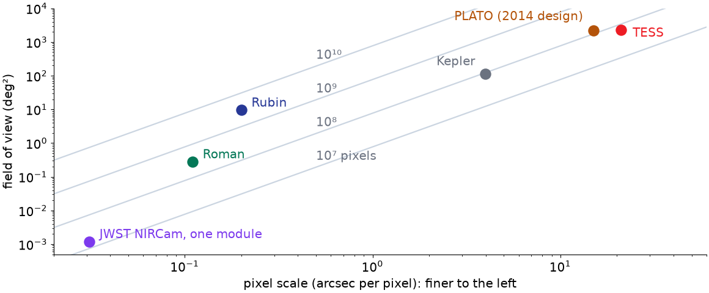
Ba quy luật
- FOV = N × scale2 cho đúng các trường đã trích dẫn: TESS 2284 / 2300, Kepler 116 / 115, Roman 0.281 / 0.281, Rubin 9.9 / 9.6 deg²
- nhìn chằm chằm (TESS, PLATO): lấy mẫu nhanh, quay lại hiếm; quét (Rubin): quay lại thường xuyên, lấy mẫu thưa (cách đọc của chúng tôi)
- SNR ∝ D√t: gương nhỏ một nửa cần phơi sáng gấp bốn lần
4 Nguồn. Ghi chú checkpoint đúng ở đâu và chúng tôi đã sửa gì, phần 1
| Điều khẳng định trong ghi chú | Kiểm tra | Kết quả |
|---|---|---|
| ‘Stars in full frames’ là một đề mục của bài báo TESS | Sec 8.4 is ‘Full Frame Images’ (Ricker p. 13) | nhãn do chúng tôi rút gọn |
| Ảnh toàn khung chứa hàng chục triệu ngôi sao | khoảng 106 vật thể mỗi ảnh, khoảng 20 triệu trong hai năm (Ricker tr. 14) | đã sửa |
| PDCSAP = (thông lượng − (1 − C) trung bình) / (C × f) | trung vị PDCSAP/SAP = C/f trong 0.34 % trên 20 tệp | chỉ chia cho f |
| a/R★ = √[(1+k)2 − b2] / sin(πT14/P) | dạng chính xác có số hạng cos2; dạng rút gọn lệch tới 2.8 % | đã sửa |
| Apogee 373 000 km | 59 R⊕ = 376 000 km (Ricker p. 8) | đã sửa |
| 1 027 hành tinh là dự báo trước khi phóng | đó là số hành tinh do TESS phát hiện trong archive ngày 2026-11-21; Ricker kỳ vọng hàng nghìn hành tinh nhỏ hơn Hải Vương | đã sửa |
| 471 là catalog các hành tinh đã đo khối lượng | 471 là danh sách rút gọn của chúng tôi sau các ngưỡng T mag < 11, P < 15 d, S/N > 12 | đã sửa |
Mỗi phép kiểm là một đoạn trích có trang PDF, hoặc một con số tính từ các tệp của chúng tôi.
4 Nguồn. Ghi chú checkpoint đúng ở đâu và chúng tôi đã sửa gì, phần 2
| Điều khẳng định trong ghi chú | Kiểm tra | Kết quả |
|---|---|---|
| HR 8799 ở 10 pc, các hành tinh ở 15 đến 70 AU | 39.4 pc, các hành tinh ở 24, 38 và 68 AU (Marois tr. 4); khoảng cách góc 0.6 đến 1.7″ | đã sửa |
| Độ chính xác tâm sáng khoảng 0.2″ (1/100 pixel) | sai số đo được 0.0010 đến 0.010″ trên nhiều transit | tốt hơn, của chúng tôi |
| TESS tránh mặt phẳng chứa tâm Ngân Hà | các dải bắt đầu từ 6°; tâm Ngân Hà ở −5.5° (tính) | ở ngay ranh giới |
| PLATO: phóng cuối 2026, 26 camera | Trang ESA: cuối 2026, 26 camera; bài báo 2014: 34 kính; một mục khác của ESA: 2027 | chưa chắc chắn |
| Roman dự kiến 2026–2027 | NASA: đã phóng ngày 30 tháng 8 năm 2026, Falcon Heavy, Launch Complex 39A | đã phóng rồi |
| TTV được xếp vào TESS tự làm | thời điểm transit là sản phẩm của TESS; khối lượng cần mô hình động lực học, thường kèm vận tốc | giữ ở nhóm đối tác |
| νmax Mặt Trời 3090 µHz, Δν 135.1 µHz | Huber p. 2 (2011) | đã xác nhận |
| Pixel 21″, 90 % ánh sáng trong 1.4′, 600 đến 1000 nm | Table 1 (Ricker p. 7), Fig 1 (Ricker p. 4) | đã xác nhận |
‘Chưa chắc chắn’ nghĩa là các nguồn chúng tôi có mâu thuẫn nhau; hãy kiểm lại với ESA trước khi nêu ngày phóng.
5 Mẫu. Sáu cách một catalog chia ngoại hành tinh; cách chia của chúng tôi dùng bốn cách đầu
| Trục | Các lớp | Dùng ở đây | Cột |
|---|---|---|---|
| Bán kính | dưới 1.25 R⊕ cỡ Trái Đất; 1.25 đến 2 siêu Trái Đất; 2 đến 4 dưới Sao Hải Vương; 4 đến 8 Sao Hải Vương/Sao Thổ; từ 8 trở lên cỡ Sao Mộc | Có | pl_rade |
| Chu kỳ quỹ đạo | dưới 1 ngày cực ngắn (USP); 1 đến 3 nóng; 3 đến 7 ấm; 7 đến 15 mát | Có | pl_orbper |
| Nhiệt độ cân bằng | trên 2000 K cực nóng; 1200 đến 2000 nóng; 500 đến 1200 ấm; dưới 500 K ôn hòa | Có | pl_eqt |
| Sao chủ | sao lùn M (dưới 3900 K); K (dưới 5200); G (dưới 6000); F và nóng hơn | Có | st_teff |
| Phương pháp phát hiện | transit, vận tốc xuyên tâm, chụp ảnh trực tiếp, thấu kính vi mô, … | Có ghi nhận, không dùng để chọn | discoverymethod |
| Hệ | một hành tinh hoặc nhiều hành tinh trong cùng hệ | Có ghi nhận, không dùng để chọn | sy_pnum |
Biên các lớp là do chúng tôi đặt (code/02_group_candidates.py); các bài khác đặt ở chỗ khác. Khối lượng, mật độ, độ nhận bức xạ và thung lũng bán kính cũng được dùng trong tài liệu, nhưng không dùng ở đây.
5 Mẫu. Mười hành tinh của chúng tôi so với 471: có đủ mọi lớp kích thước và loại sao, lớp chu kỳ 7 đến 15 ngày thì trống
Bán kính
| Lớp | 471 trong catalog | Của ta |
|---|---|---|
| Cỡ Trái Đất | 14 (3 %) | 1 |
| Siêu Trái Đất | 33 (7 %) | 2 |
| Dưới Hải Vương | 138 (29 %) | 1 |
| Hải Vương/Thổ | 46 (10 %) | 1 |
| Cỡ Sao Mộc | 240 (51 %) | 5 |
Chu kỳ quỹ đạo
| Lớp | 471 trong catalog | Của ta |
|---|---|---|
| Cực ngắn (<1 ngày) | 15 (3 %) | 3 |
| Nóng (1-3 ngày) | 98 (21 %) | 2 |
| Ấm (3-7 ngày) | 219 (46 %) | 5 |
| Mát (7-15 ngày) | 139 (30 %) | 0 |
Nhiệt độ cân bằng
| Lớp | 471 trong catalog | Của ta |
|---|---|---|
| Cực nóng (>2000 K) | 39 (8 %) | 2 |
| Nóng (1200-2000 K) | 195 (41 %) | 5 |
| Ấm (500-1200 K) | 223 (47 %) | 1 |
| Ôn hòa (<500 K) | 14 (3 %) | 2 |
Sao chủ
| Lớp | 471 trong catalog | Của ta |
|---|---|---|
| Sao lùn M | 47 (10 %) | 3 |
| Sao lùn K | 101 (21 %) | 2 |
| G (giống Mặt Trời) | 173 (37 %) | 2 |
| F/nóng hơn | 150 (32 %) | 3 |
Đỏ: lớp chiếm ít nhất 25 % trong 471 hành tinh mà mười hành tinh của chúng tôi chỉ chiếm tối đa 40 % phần đó. Thanh: tỉ lệ trong 471.
5 Mẫu. Mười hành tinh đã đủ chưa? Đủ để chứng minh phương pháp, chưa đủ để nói gì về một lớp
| Mười hành tinh | |
|---|---|
| Đủ để | Chứng tỏ pipeline chạy được từ 1.2 đến 15.6 R⊕, chu kỳ 0.28 đến 6.1 ngày, cấp sao T từ 6.8 đến 10.8, cả bốn loại sao chủ và cả bốn camera TESS. |
| Chưa đủ để | Phát biểu theo từng lớp: lớp cỡ Trái Đất, Sao Hải Vương/Sao Thổ và dưới Sao Hải Vương mỗi lớp chỉ có một hành tinh. Không hành tinh nào có chu kỳ 7 đến 15 ngày (139 trên 471); chu kỳ dài nhất của chúng tôi là 6.1 ngày, nên phép tìm mù đến 15 ngày chưa được thử trên mức đó. Phát hiện bằng vận tốc xuyên tâm: 3 trên 10, 8 trên 471. |
| Điểm yếu | Ba hành tinh nhỏ nhất, chu kỳ ngắn nhất được dò quanh chu kỳ catalog; K2-141 b dò mù cho ra 5.68 ngày, giá trị catalog là 0.280 ngày. |
Phiếu đề bài chỉ ghi tiêu đề, không nêu số hành tinh.
6 Đường cong ánh sáng. 1 HD 118203 b: thô, đã làm phẳng và gập pha

Hình ảnh thu được
- 7 transit được gập pha, thời lượng 4.32 h, 10 lần xả mômen
- độ sâu giữa transit 3.418 ppm quan sát, 3.054 ppm theo mô hình; độ phân tán 388 ppm mỗi 2 phút
- làm phẳng chỉ đổi rms dưới 20 %: đường cong thô đã phẳng
6 Đường cong ánh sáng. 2 HD 189733 b: thô, đã làm phẳng và gập pha
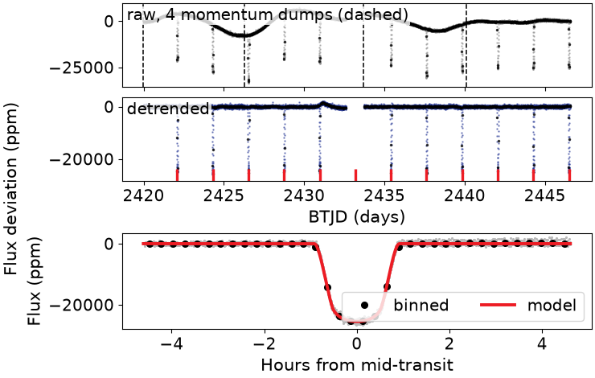
Hình ảnh thu được
- 12 transit được gập pha, thời lượng 1.44 h, 4 lần xả mômen
- độ sâu giữa transit 24.834 ppm quan sát, 23.752 ppm theo mô hình; độ phân tán 327 ppm mỗi 2 phút
- làm phẳng giảm rms từ 4.945 xuống 3.593 ppm: do biến thiên của sao
6 Đường cong ánh sáng. 3 HD 209458 b: thô, đã làm phẳng và gập pha
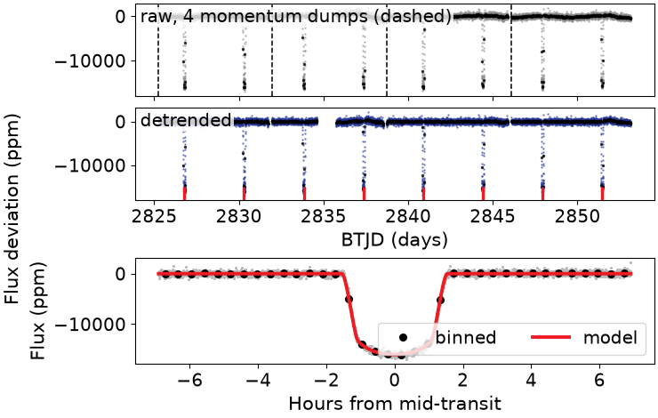
Hình ảnh thu được
- 8 transit được gập pha, thời lượng 2.16 h, 4 lần xả mômen
- độ sâu giữa transit 15.798 ppm quan sát, 14.699 ppm theo mô hình; độ phân tán 334 ppm mỗi 2 phút
- làm phẳng chỉ đổi rms dưới 20 %: đường cong thô đã phẳng
6 Đường cong ánh sáng. 4 WASP-18 b: thô, đã làm phẳng và gập pha

Hình ảnh thu được
- 97 transit được gập pha, thời lượng 2.16 h, 16 lần xả mômen
- độ sâu giữa transit 10.688 ppm quan sát, 9.716 ppm theo mô hình; độ phân tán 675 ppm mỗi 2 phút
- làm phẳng chỉ đổi rms dưới 20 %: đường cong thô đã phẳng
6 Đường cong ánh sáng. 5 WASP-62 b: thô, đã làm phẳng và gập pha
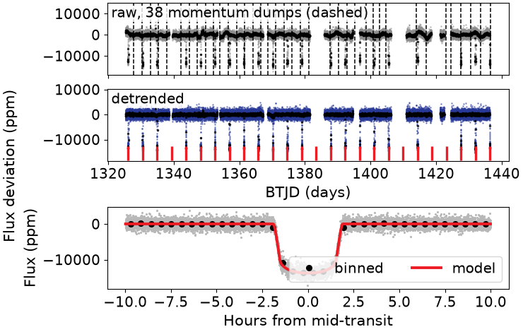
Hình ảnh thu được
- 22 transit được gập pha, thời lượng 3.12 h, 38 lần xả mômen
- độ sâu giữa transit 13.619 ppm quan sát, 12.196 ppm theo mô hình; độ phân tán 880 ppm mỗi 2 phút
- làm phẳng chỉ đổi rms dưới 20 %: đường cong thô đã phẳng
6 Đường cong ánh sáng. 6 LTT 9779 b: thô, đã làm phẳng và gập pha

Hình ảnh thu được
- 34 transit được gập pha, thời lượng 0.55 h, 12 lần xả mômen
- độ sâu giữa transit 1.585 ppm quan sát, 1.932 ppm theo mô hình; độ phân tán 629 ppm mỗi 2 phút
- làm phẳng chỉ đổi rms dưới 20 %: đường cong thô đã phẳng
6 Đường cong ánh sáng. 7 TOI-270 c: thô, đã làm phẳng và gập pha
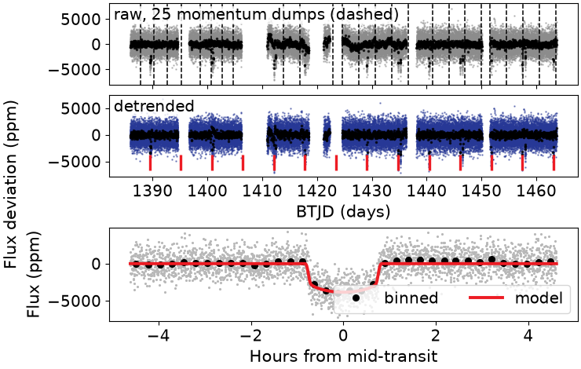
Hình ảnh thu được
- 11 transit được gập pha, thời lượng 1.44 h, 25 lần xả mômen
- độ sâu giữa transit 3.762 ppm quan sát, 3.305 ppm theo mô hình; độ phân tán 1309 ppm mỗi 2 phút
- làm phẳng chỉ đổi rms dưới 20 %: đường cong thô đã phẳng
6 Đường cong ánh sáng. 8 LTT 1445 A b: thô, đã làm phẳng và gập pha
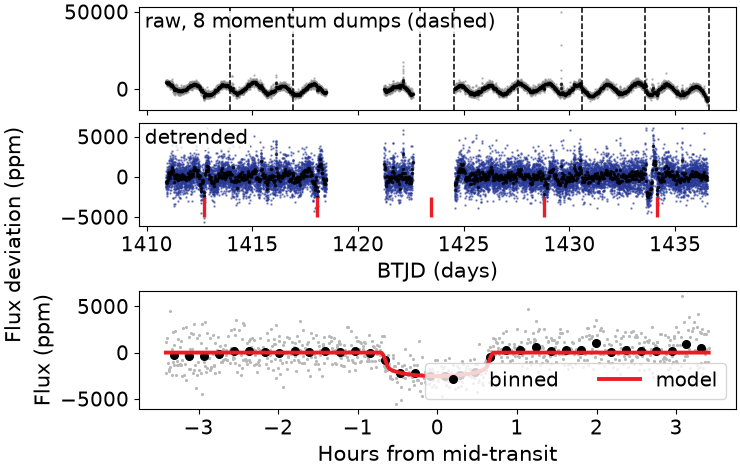
Hình ảnh thu được
- 4 transit được gập pha, thời lượng 1.07 h, 8 lần xả mômen
- độ sâu giữa transit 2.447 ppm quan sát, 2.208 ppm theo mô hình; độ phân tán 1067 ppm mỗi 2 phút
- làm phẳng giảm rms từ 2.636 xuống 1.238 ppm: do biến thiên của sao
6 Đường cong ánh sáng. 9 GJ 1132 b: thô, đã làm phẳng và gập pha
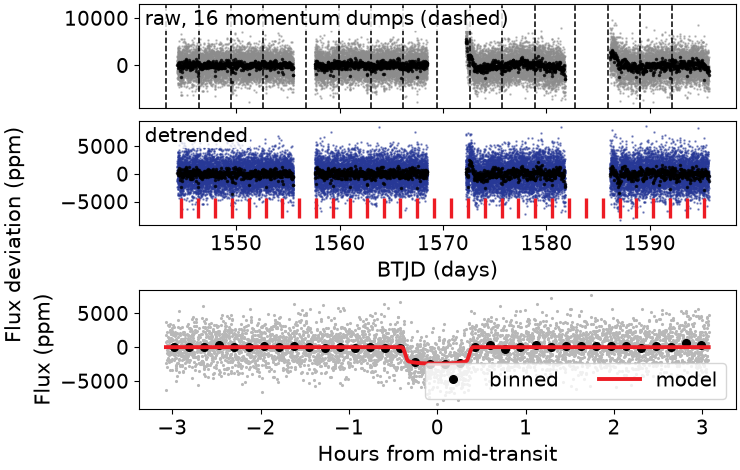
Hình ảnh thu được
- 26 transit được gập pha, thời lượng 0.96 h, 16 lần xả mômen
- độ sâu giữa transit 2.379 ppm quan sát, 2.244 ppm theo mô hình; độ phân tán 1957 ppm mỗi 2 phút
- làm phẳng chỉ đổi rms dưới 20 %: đường cong thô đã phẳng
6 Đường cong ánh sáng. 10 K2-141 b: thô, đã làm phẳng và gập pha
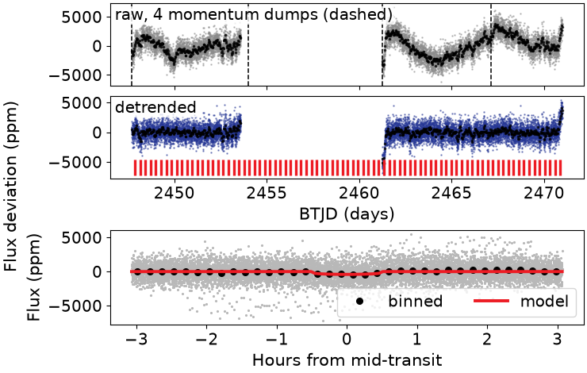
Hình ảnh thu được
- 57 transit được gập pha, thời lượng 0.96 h, 4 lần xả mômen
- độ sâu giữa transit 442 ppm quan sát, 355 ppm theo mô hình; độ phân tán 1036 ppm mỗi 2 phút
- làm phẳng giảm rms từ 1.786 xuống 1.235 ppm: do biến thiên của sao
7 Đồ thị. Loại Hình 5: các hành tinh của chúng tôi nằm đâu trong số những hành tinh đã biết


Hình ảnh thu được
- các sao chủ sáng nhất: HD 209458 b (V 7.7), HD 189733 b (V 7.7); 33 hành tinh đã biết có V < 8
- 0 = giống Trái Đất, 1 = nước: TOI−270 c 1.1; LTT 1445 A b 0.1; GJ 1132 b −0.1; K2−141 b −0.2
7 Chẩn đoán. Transit lẻ so với chẵn: ba hành tinh vượt 3σ, nhưng chỉ lệch 1 đến 17 %
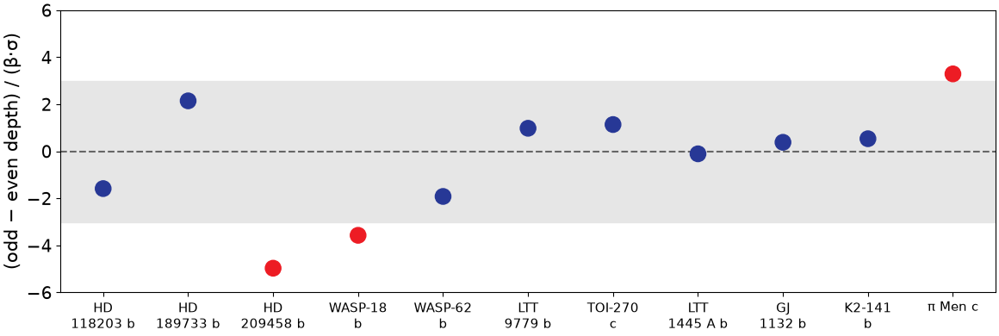
Hình ảnh thu được
- ngoài 3σ: HD 209458 b, WASP-18 b, pi Men c
- chênh lệch độ sâu: HD 209458 b 1.4 %, WASP-18 b 1.1 %, pi Men c 16.4 %
- π Men c chỉ có 2 transit lẻ và 3 transit chẵn; độ phân tán theo từng transit (31 ppm) cho khoảng 1.3σ
7 Chẩn đoán. Thông lượng tại pha 0.5: WASP-18 b để lộ ánh sáng của chính nó, 352 ppm

Hình ảnh thu được
- WASP-18 b: 352 ± 9 ppm (nhiễu trắng); nhân ×β 2.09 cho ±19
- Shporer+2019 (TESS sector 2): nhật thực thứ cấp 341 +17 −18 ppm, nên hai kết quả khớp nhau
- mọi hành tinh khác đều dưới 3σ; GJ 1132 b là 223 ± 72 ppm, không có ý nghĩa sau khi nhân ×β
7 Chẩn đoán. Nhiễu đỏ: lấy trung bình giúp ít hơn 1/√N, theo hệ số β từ 1.0 đến 3.6

Hình ảnh thu được
- β lớn nhất: HD 189733 b 3.62, HD 118203 b 2.91; nhỏ nhất: LTT 9779 b 1.03
- π Men c có β = 1.52, rms mỗi điểm 124 ppm: đường cong ánh sáng yên tĩnh nhất trong mười một hành tinh
7 Kết quả. Tám trong mười bán kính nằm trong 4 % so với catalog; chu kỳ trong 0.03 %
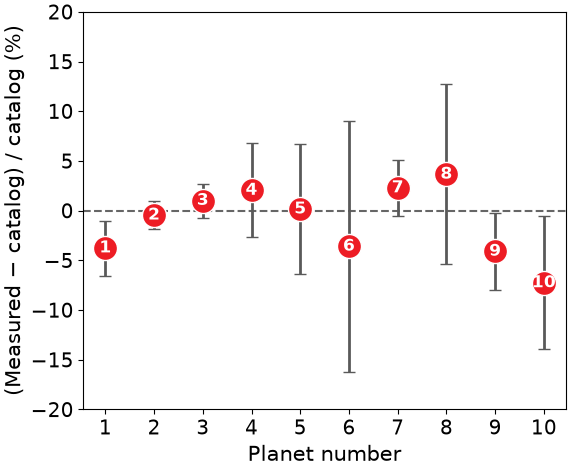

7 Kết quả. Chênh 0.3 đến 10 % so với catalog, đọc theo đơn vị sai số
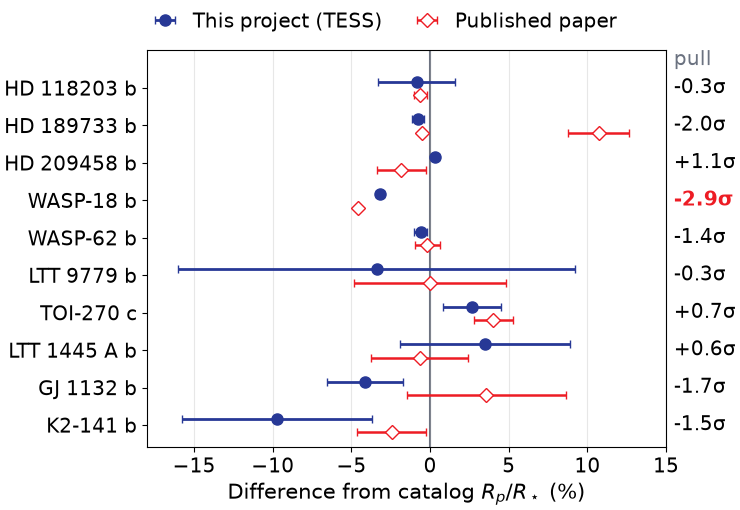
Cách đọc
- 9/10 tỉ số trong 2σ; ngoài: WASP-18 b, -3.2 % (-2.9σ)
- K2-141 b lệch nhất, -9.7 %, nhưng sai số 6.1 %: -1.5σ
- HD 189733 b: -0.8 % nhưng -2.0σ; với nhiễu đỏ (×3.6) là -0.6σ
- Các bài báo cũng phân tán quanh catalog; WASP-18 b: cả hai phân tích TESS đều thấp hơn
Bán kính và chu kỳ
- bán kính: 10/10 trong 2σ (0.1 đến 7.3 %)
- chu kỳ: 8/10; TOI-270 c -4.2σ, WASP-18 b +2.3σ
7 Kết quả. Giá trị trong catalog hiếm khi đến từ bài báo phát hiện
| Hành tinh | Bài báo phát hiện | Chu kỳ | Bán kính | Rp/R★ |
|---|---|---|---|---|
| 1 HD 118203 b | da Silva 2006 | Zhang 2024 | Zhang 2024 | Zhang 2024 |
| 2 HD 189733 b | Bouchy 2005 | Stassun 2017 | Stassun 2017 | Kokori 2023 |
| 3 HD 209458 b | Henry 2000 | Stassun 2017 | Stassun 2017 | Kokori 2023 |
| 4 WASP-18 b | Hellier 2009 | Cortés-Zuleta 2020 | Cortés-Zuleta 2020 | Cortés-Zuleta 2020 |
| 5 WASP-62 b | Hellier 2012 | Stassun 2017 | Stassun 2017 | Patel & Espinoza 2022 |
| 6 LTT 9779 b | Jenkins 2020 | Jenkins 2020 | Jenkins 2020 | Jenkins 2020 |
| 7 TOI-270 c | Günther 2019 | Kaye 2022 | Kaye 2022 | Kaye 2022 |
| 8 LTT 1445 A b | Winters 2019 | Pass 2023 | Pass 2023 | Pass 2023 |
| 9 GJ 1132 b | Berta-Thompson 2015 | Xue 2024 | Xue 2024 | Xue 2024 |
| 10 K2-141 b | Malavolta 2018 | Bonomo 2023 | Bonomo 2023 | Barragán 2018 |
8 Tác giả và chúng tôi. Tỉ số Rp/R★ so với 12 giá trị đã công bố
| Hành tinh | Bài báo | Đã công bố | Của chúng tôi | Δ | Pull (tỉ số) | Pull (Rp) | Kết luận |
|---|---|---|---|---|---|---|---|
| 1 HD 118203 b | Pepper 2020 | 0.0554 | 0.0553 | -0.2 % | -0.1σ | -0.8σ | khớp |
| 2 HD 189733 b | Bouchy 2005 | 0.1720 | 0.1541 | -10.4 % | -5.8σ | -4.0σ | lệch |
| 2 HD 189733 b | Knutson 2007 | 0.1545 | 0.1541 | -0.2 % | -0.6σ | -0.8σ | khớp |
| 3 HD 209458 b | Charbonneau 2000 | 0.1186 | 0.1212 | +2.2 % | +1.4σ | +4.3σ | R lệch |
| 4 WASP-18 b | Shporer 2019 | 0.0972 | 0.0986 | +1.5 % | +5.1σ | +1.1σ | lệch |
| 5 WASP-62 b | Hellier 2012 | 0.1109 | 0.1104 | -0.4 % | -0.5σ | -0.6σ | khớp |
| 6 LTT 9779 b | Jenkins 2020 | 0.0455 | 0.0440 | -3.4 % | -0.3σ | -0.1σ | khớp |
| 7 TOI-270 c | Gunther 2019 | 0.0583 | 0.0575 | -1.3 % | -0.6σ | -0.3σ | khớp |
| 8 LTT 1445 A b | Winters 2021 | 0.0451 | 0.0470 | +4.2 % | +0.7σ | +0.6σ | khớp |
| 9 GJ 1132 b | Berta-Thompson 2015 | 0.0512 | 0.0474 | -7.5 % | -1.4σ | -0.1σ | khớp |
| 10 K2-141 b | Malavolta 2018 | 0.0204 | 0.0188 | -7.5 % | -1.1σ | -1.0σ | khớp |
| π pi Men c | Huang 2018 | 0.0170 | 0.0159 | -6.6 % | -1.0σ | -0.1σ | khớp |
8 Tác giả và chúng tôi. Chỗ chúng tôi khác, và vì sao
HD 189733 b so với Bouchy+2005
Tỉ số 0.172 (2005) so với 0.1541 của chúng tôi. Spitzer 2007 cho 0.1545 và khớp với chúng tôi (-0.25 %). Giá trị năm 2005 là giá trị ngoại lai.
HD 209458 b so với Charbonneau+2000
Bán kính +11 %: bài báo giả định R★ = 1.1, archive ghi 1.19. Tỉ số chỉ lệch +2.2 %.
WASP-18 b vs Shporer+2019
Tỉ số +1.5 % (danh nghĩa 5σ), bán kính +6.2 % (+1.1σ). Khác sector; chưa tìm ra nguyên nhân.
8 Tác giả và chúng tôi. Các PDF đã kiểm: tên hành tinh tô vàng, số công bố tô xanh hoặc đỏ
| Mục | Đã làm gì |
|---|---|
| Thư mục | literature/checking/, mỗi PDF có nhắc tên một hành tinh của dự án có một bản chú thích; bản gốc trong literature/pdf/ không bị sửa |
| Vàng | mọi lần xuất hiện của mười một tên hành tinh |
| Xanh hoặc đỏ | chu kỳ, tỉ số và bán kính đã công bố, kèm chú thích: giá trị công bố, giá trị của chúng tôi, chênh lệch, pull, kết luận |
| Số lượng | 38 PDF đã chú thích; 44 giá trị được đánh dấu là khớp, 8 giá trị bị đánh dấu là lệch |
| Kiểm tra cuối | 35 trên 35 con số được trích đã được tìm thấy nguyên văn trong văn bản PDF |
9 Tài liệu. 150 bài đã kiểm chứng trong mười một nhóm phương pháp

9 Tài liệu. Mỗi bước của pipeline đều có một bài báo đứng sau
| Bước | Chúng tôi làm gì | Các bài chính (đều đã kiểm chứng) |
|---|---|---|
| Download | SPOC 2-min PDCSAP; TIC | Ricker 2015; Stassun 2018; Smith 2012; Stumpe 2012 |
| Detrend | Savitzky-Golay (lightkurve), masked | Vanderburg 2014; Foreman-Mackey 2017; Hippke 2019 (wotan) |
| Search | BLS | Kovács 2002; Hippke and Heller 2019 (TLS); Shallue 2018 |
| Fit | batman + emcee, q1,q2 | Mandel and Agol 2002; Kreidberg 2015; Foreman-Mackey 2013; Kipping 2013 |
| Errors | MCMC + detrend + R★; red noise | Pont 2006; Berger 2018; Torres 2010 |
| Vet | odd-even, phase 0.5 | Twicken 2018; Giacalone 2021; Morton 2012; Shporer 2019 |
| Interpret | mass-radius, radius valley | Zeng 2019; Fulton 2017; Owen and Wu 2017 |
9 Tài liệu. A Sứ mệnh, catalog và pipeline
Phương pháp con: Thiết kế sứ mệnh và sản lượng kỳ vọng · Catalog mục tiêu (TIC, TOI) · Pipeline SPOC: điều kiện hóa trước khi tìm, kiểm định dữ liệu · Quang đo ảnh toàn khung (QLP, eleanor, difference imaging) · Gaia làm mốc cho khoảng cách và bán kính.
| Bài báo | Tiêu đề |
|---|---|
| Ricker 2015 | The Transiting Exoplanet Survey Satellite ✓ |
| Stassun 2018 | The TESS Input Catalog and Candidate Target List ✓ |
| Smith 2012 | Kepler Presearch Data Conditioning II - A Bayesian Approach to Systematic Error… ✓ |
| Twicken 2018 | Kepler Data Validation I -- Architecture, Diagnostic Tests, and Data Products for… ✓ |
| Huang 2020 | Photometry of 10 Million Stars from the First Two Years of TESS Full Frame Images |
| Feinstein 2019 | eleanor: An open-source tool for extracting light curves from the TESS Full-Frame… |
17 bài đã kiểm chứng trong nhóm này; ✓ = được dùng trong dự án này; danh sách đầy đủ ở phụ lục.
9 Tài liệu. B Làm phẳng và biến thiên của sao
Phương pháp con: Bộ lọc trung vị / Savitzky-Golay (dùng ở đây, qua lightkurve) · Spline và tự làm phẳng (K2SFF) · Quá trình Gauss (celerite, K2SC) · Thuật toán lọc xu hướng (TFA) và wotan biweight.
| Bài báo | Tiêu đề |
|---|---|
| Kovács 2005 | A Trend Filtering Algorithm for wide field variability surveys |
| Vanderburg 2014 | A Technique for Extracting Highly Precise Photometry for the Two-Wheeled Kepler… |
| Aigrain 2016 | K2SC: Flexible systematics correction and detrending of K2 light curves using… |
| Foreman-Mackey 2017 | Fast and scalable Gaussian process modeling with applications to astronomical time… |
| Hippke 2019 | Wotan: Comprehensive time-series de-trending in Python |
| Barros 2020 | Improving transit characterisation with Gaussian process modelling of stellar… |
6 bài đã kiểm chứng trong nhóm này; ✓ = được dùng trong dự án này; danh sách đầy đủ ở phụ lục.
9 Tài liệu. C Tìm transit và học máy
Phương pháp con: Box Least Squares (BLS, dùng ở đây) · Transit Least Squares (hình dạng vật lý) · Lomb-Scargle cho tín hiệu tuần hoàn (RV, tự quay) · Mạng tích chập để phân loại và kiểm định · Khoa học công dân (Planet Hunters TESS).
| Bài báo | Tiêu đề |
|---|---|
| Kovács 2002 | A box-fitting algorithm in the search for periodic transits ✓ |
| Hippke 2019 | Transit Least Squares: Optimized transit detection algorithm to search for periodic… |
| Shallue 2018 | Identifying Exoplanets with Deep Learning: A Five Planet Resonant Chain around… |
| Osborn 2020 | Rapid Classification of TESS Planet Candidates with Convolutional Neural Networks |
| Eisner 2021 | Planet Hunters TESS II: Findings from the first two years of TESS |
16 bài đã kiểm chứng trong nhóm này; ✓ = được dùng trong dự án này; danh sách đầy đủ ở phụ lục.
9 Tài liệu. D Mô hình hóa transit và suy luận
Phương pháp con: Đường cong ánh sáng giải tích có tối tâm (Mandel-Agol, batman: dùng ở đây) · Hình học từ đường cong ánh sáng (Seager và Mallen-Ornelas, Winn) · Luật tối tâm và prior (Kipping q1,q2: dùng ở đây; Claret cho TESS) · Bộ lấy mẫu MCMC (emcee, bất biến affine: dùng ở đây) · Gói phần mềm: EXOFAST, juliet, exoplanet · Nhiễu đỏ và thời gian phơi sáng hữu hạn (Pont, Kipping).
| Bài báo | Tiêu đề |
|---|---|
| Mandel 2002 | Analytic Light Curves for Planetary Transit Searches ✓ |
| Seager 2003 | On the Unique Solution of Planet and Star Parameters from an Extrasolar Planet… ✓ |
| Kreidberg 2015 | batman: BAsic Transit Model cAlculatioN in Python ✓ |
| Foreman-Mackey 2013 | emcee: The MCMC Hammer ✓ |
| Kipping 2013 | Efficient, uninformative sampling of limb darkening coefficients for two-parameter… ✓ |
| Pont 2006 | The effect of red noise on planetary transit detection ✓ |
19 bài đã kiểm chứng trong nhóm này; ✓ = được dùng trong dự án này; danh sách đầy đủ ở phụ lục.
9 Tài liệu. E Kiểm định và xác nhận thống kê
Phương pháp con: Kiểm tra độ sâu lẻ-chẵn và nhật thực thứ cấp · Kiểm tra tâm sáng và nền · Kịch bản pha trộn và xác suất dương tính giả (vespa, TRICERATOPS) · Tỉ lệ dương tính giả của Kepler · Quang đo theo dõi từ mặt đất.
| Bài báo | Tiêu đề |
|---|---|
| Torres 2011 | Modeling Kepler transit light curves as false positives: Rejection of blend… |
| Morton 2012 | An Efficient Automated Validation Procedure for Exoplanet Transit Candidates |
| Giacalone 2021 | Vetting of 384 TESS Objects of Interest with TRICERATOPS and Statistical Validation… |
| Fressin 2013 | The false positive rate of Kepler and the occurrence of planets |
| Bryson 2013 | Identification of Background False Positives from Kepler Data |
9 bài đã kiểm chứng trong nhóm này; ✓ = được dùng trong dự án này; danh sách đầy đủ ở phụ lục.
9 Tài liệu. F Đặc trưng hóa sao
Phương pháp con: Khối lượng và bán kính của sao thường · Bán kính dựa trên Gaia (Berger, Fulton và Petigura) · Mô hình tiến hóa sao (Dartmouth) · Hệ thức tỉ lệ cho sao lùn M (Mann) · Địa chấn học sao.
| Bài báo | Tiêu đề |
|---|---|
| Torres 2010 | Accurate masses and radii of normal stars: modern results and applications |
| Berger 2018 | Revised Radii of Kepler Stars and Planets Using Gaia Data Release 2 |
| Fulton 2018 | The California Kepler Survey VII. Precise Planet Radii Leveraging Gaia DR2 Reveal… |
| Dotter 2008 | The Dartmouth Stellar Evolution Database |
| Mann 2015 | How to Constrain Your M Dwarf: measuring effective temperature, bolometric… |
| Huber 2013 | Fundamental Properties of Stars using Asteroseismology from Kepler & CoRoT and… |
8 bài đã kiểm chứng trong nhóm này; ✓ = được dùng trong dự án này; danh sách đầy đủ ở phụ lục.
9 Tài liệu. G Quần thể, tần suất và thành phần
Phương pháp con: Thung lũng bán kính và bay hơi · Hệ thức khối lượng-bán kính và đường cong thành phần (Zeng: dùng trong hình của chúng tôi) · Khối lượng-bán kính xác suất (Chen và Kipping, Wolfgang) · Tần suất xuất hiện từ Kepler · Mất khối lượng do lõi cấp năng lượng.
| Bài báo | Tiêu đề |
|---|---|
| Fulton 2017 | The California-Kepler Survey. III. A Gap in the Radius Distribution of Small Planets |
| Owen 2013 | Kepler planets: a tale of evaporation |
| Zeng 2019 | Growth Model Interpretation of Planet Size Distribution ✓ |
| Chen 2017 | Probabilistic Forecasting of the Masses and Radii of Other Worlds |
| Howard 2012 | Planet Occurrence within 0.25 AU of Solar-type Stars from Kepler |
| Van Eylen 2018 | An asteroseismic view of the radius valley: stripped cores, not born rocky |
20 bài đã kiểm chứng trong nhóm này; ✓ = được dùng trong dự án này; danh sách đầy đủ ở phụ lục.
9 Tài liệu. H Các phát hiện kinh điển và trường hợp khoa học
Phương pháp con: Phát hiện bằng vận tốc xuyên tâm (51 Peg b) · Các transit đầu tiên (HD 209458 b) · Kepler và K2 · Kết quả đầu tiên của TESS · Khí quyển và mây · Vùng ở được và các chỉ số TSM.
| Bài báo | Tiêu đề |
|---|---|
| Mayor 1995 | A Jupiter-mass companion to a solar-type star |
| Charbonneau 2000 | Detection of Planetary Transits Across a Sun-like Star ✓ |
| Borucki 2010 | Kepler Planet-Detection Mission: Introduction and First Results |
| Gillon 2017 | Seven temperate terrestrial planets around the nearby ultracool dwarf star… |
| Huang 2018 | TESS Discovery of a Transiting Super-Earth in the $π$ Mensae System ✓ |
| Kempton 2018 | A Framework for Prioritizing the TESS Planetary Candidates Most Amenable to… |
19 bài đã kiểm chứng trong nhóm này; ✓ = được dùng trong dự án này; danh sách đầy đủ ở phụ lục.
9 Tài liệu. K Lịch sử tìm kiếm: ngoại hành tinh đã được tìm ra thế nào
Phương pháp con: Doppler và đo thời gian pulsar (1992, 1995, ESPRESSO) · Khảo sát transit từ mặt đất (HD 209458 b, TrES, HAT, SuperWASP, KELT, MEarth) · Quang đo từ không gian (CoRoT, Kepler, K2, TESS, CHEOPS, PLATO) · Khí quyển và theo dõi (HST, Spitzer, JWST) · Thấu kính vi mô và chụp ảnh trực tiếp để làm bối cảnh.
| Bài báo | Tiêu đề |
|---|---|
| Wolszczan 1992 | A planetary system around the millisecond pulsar PSR1257 + 12 |
| Alonso 2004 | TrES-1: The Transiting Planet of a Bright K0 V Star |
| Pollacco 2006 | The WASP Project and the SuperWASP Cameras |
| Auvergne 2009 | The CoRoT satellite in flight : description and performance |
| Koch 2010 | Kepler Mission Design, Realized Photometric Performance, and Early Science |
| Benz 2021 | The CHEOPS mission |
22 bài đã kiểm chứng trong nhóm này; ✓ = được dùng trong dự án này; danh sách đầy đủ ở phụ lục.
9 Tài liệu. Các bài báo phát hiện đứng sau những hành tinh chúng tôi so sánh
| Hành tinh | Bài báo phát hiện hoặc xác nhận |
|---|---|
| 1 HD 118203 b | Pepper 2020 (TESS) |
| 2 HD 189733 b | Bouchy 2005; Knutson 2007 (Spitzer) |
| 3 HD 209458 b | Charbonneau 2000 |
| 4 WASP-18 b | Hellier 2009; Shporer 2019 (TESS) |
| 5 WASP-62 b | Hellier 2012 |
| 6 LTT 9779 b | Jenkins 2020 |
| 7 TOI-270 c | Günther 2019 |
| 8 LTT 1445 A b | Winters 2021 |
| 9 GJ 1132 b | Berta-Thompson 2015 |
| 10 K2-141 b | Malavolta 2018 |
| π pi Men c | Huang 2018; Gandolfi 2018 |
10 Dữ liệu. Mọi con số trong catalog đều có thể truy vấn lại: 52 trên 52 giá trị khớp hôm nay
| Kiểm tra | Kết quả |
|---|---|
| Các cột được so sánh | chu kỳ, bán kính, tỉ số, bán kính sao |
| Hành tinh | 13 (10 + π Men c + 2 phép thử sức chịu) |
| Bằng file CSV đã tải | 52 trên 52 giá trị (truy vấn trực tiếp, 16/11/2026) |
Bảng: pscomppars, mỗi hành tinh một dòng; file data/catalog_recheck.csv; script code/16_reproduce.py.
10 Dữ liệu. Các đường cong ánh sáng: 21 file SPOC, mỗi file có URL và md5
| Hành tinh | Sector | File |
|---|---|---|
| 1 HD 118203 b | 15 16 | 2 |
| 2 HD 189733 b | 41 | 1 |
| 3 HD 209458 b | 56 | 1 |
| 4 WASP-18 b | 103 104 105 106 | 4 |
| 5 WASP-62 b | 1 2 3 4 | 4 |
| 6 LTT 9779 b | 2 | 1 |
| Hành tinh | Sector | File |
|---|---|---|
| 7 TOI-270 c | 3 4 5 | 3 |
| 8 LTT 1445 A b | 4 | 1 |
| 9 GJ 1132 b | 9 10 | 2 |
| 10 K2-141 b | 42 | 1 |
| π pi Men c | 1 | 1 |
10 Dữ liệu. Chạy pipeline và kỳ vọng các con số này
| Hành tinh | Chế độ | Chu kỳ (ngày) | Rp/R★ | Rp (R⊕) | Catalog |
|---|---|---|---|---|---|
| 1 HD 118203 b | mù | 6.13498 | 0.0553 | 12.30 ± 0.35 | 12.78 |
| 2 HD 189733 b | mù | 2.21858 | 0.1541 | 12.61 ± 0.18 | 12.67 |
| 3 HD 209458 b | mù | 3.52473 | 0.1212 | 15.74 ± 0.27 | 15.58 |
| 4 WASP-18 b | mù | 0.94145 | 0.0986 | 14.18 ± 0.66 | 13.90 |
| 5 WASP-62 b | mù | 4.41195 | 0.1104 | 14.82 ± 0.97 | 14.80 |
| 6 LTT 9779 b | có hướng dẫn | 0.79205 | 0.0440 | 4.55 ± 0.59 | 4.72 |
| 7 TOI-270 c | mù | 5.66023 | 0.0575 | 2.38 ± 0.07 | 2.33 |
| 8 LTT 1445 A b | có hướng dẫn | 5.35904 | 0.0470 | 1.39 ± 0.12 | 1.34 |
| 9 GJ 1132 b | mù | 1.62891 | 0.0474 | 1.14 ± 0.05 | 1.19 |
| 10 K2-141 b | có hướng dẫn | 0.28041 | 0.0188 | 1.40 ± 0.10 | 1.51 |
| π pi Men c | mù | 6.26778 | 0.0159 | 2.03 ± 0.07 | 2.02 |
10 Dữ liệu. Một file TESS thô là file FITS: một header, một bảng các cadence và một mặt nạ pixel
| Phần mở rộng | Nó chứa gì | Kích thước trong ví dụ |
|---|---|---|
| PRIMARY | chỉ có header: đối tượng, sector, camera, CCD, phiên bản xử lý | không có bảng |
| LIGHTCURVE | mỗi dòng một cadence 2 phút, 20 cột | 19 149 dòng |
| APERTURE | mặt nạ pixel: pixel nào được cộng (bit 2) và pixel nào cho nền (bit 4) | 11 × 13 số nguyên |
| PIXELS (file target pixel) | cùng các cadence đó, nhưng mỗi ô là một ảnh: RAW_CNTS, FLUX, FLUX_BKG ... | 20 076 dòng, mỗi dòng 11 × 21 pixel |
Ví dụ của chúng tôi
HD 189733 b, sector 41, camera 1, CCD 3; 1.94 MB; SPOC spoc-5.0.42.
Thời gian
BTJD = BJDTDB − 2 457 000 ngày; cadence 120 s; từ 2420.0 đến 2446.6.
File target pixel (_tp.fits, 93.4 MB cho π Men c) là sản phẩm gần dữ liệu gốc hơn.
10 Dữ liệu. 20 cột của bảng đường cong ánh sáng, chia thành sáu nhóm
| Nhóm | Cột | Đơn vị | Là gì |
|---|---|---|---|
| Thời gian | TIME, TIMECORR, CADENCENO | BTJD ngày, ngày, số nguyên | TIME được lưu bằng 64 bit (float64) |
| Thông lượng khẩu độ | SAP_FLUX, SAP_FLUX_ERR | e−/s | tổng các pixel của khẩu độ tối ưu |
| Nền | SAP_BKG, SAP_BKG_ERR | e−/s | nền được cộng trên cùng các pixel đó |
| Thông lượng đã hiệu chỉnh | PDCSAP_FLUX, PDCSAP_FLUX_ERR | e−/s | đã loại hệ thống sai số, đã hiệu chỉnh tỉ lệ thông lượng trong khẩu độ và độ nhiễm |
| Chất lượng | QUALITY | mặt nạ bit số nguyên | 0 = tốt; mỗi bit là một lý do để nghi ngờ cadence |
| Vị trí | PSF_CENTR1/2, MOM_CENTR1/2 (+ sai số), POS_CORR1/2 | pixel | vị trí ngôi sao rơi trên CCD, theo từng cadence |
Tên, đơn vị và định dạng đọc từ header FITS. Định nghĩa SAP và PDCSAP được trích từ sổ tay archive TESS của STScI; các mô tả khác là của chúng tôi.
10 Dữ liệu. Các cột thô được vẽ ra: 19 149 cadence, 834 cadence bị gắn cờ
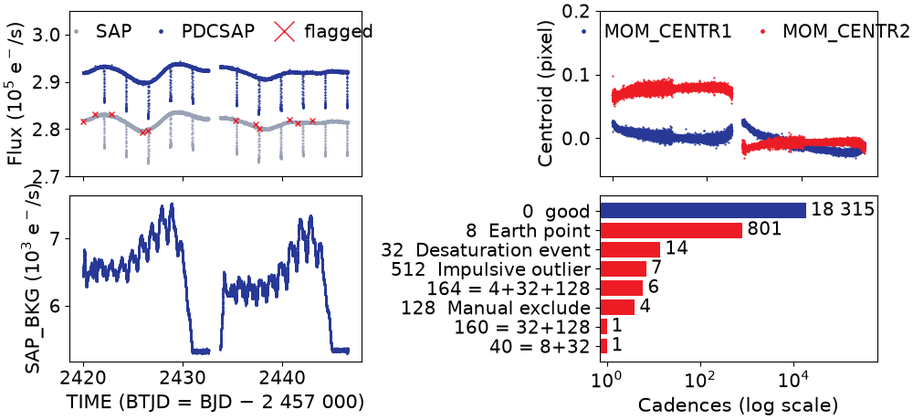
Hình ảnh thu được
- 18 315 cadence tốt (QUALITY = 0); 801 cadence Earth point (cờ 8)
- PDCSAP cao hơn SAP 3.7 %: CROWDSAP 0.979 / FLFRCSAP 0.944 = 1.037
10 Dữ liệu. Dưới đường cong ánh sáng là các pixel. Cộng 45 pixel cho SAP_FLUX với sai khác 2 phần 107
10 Dữ liệu. Cách lấy dữ liệu gốc: URL của file, lightkurve hoặc cổng MAST
| Cách | Lệnh hoặc địa chỉ | Ghi chú |
|---|---|---|
| 1 Lấy thẳng file | curl -O https://archive.stsci.edu/missions/tess/tid/s0041/0000/0002/5636/4928/tess2021204101404-s0041-0000000256364928-0212-s_lc.fits | cái chúng tôi đã dùng; cùng cây thư mục có _tp.fits và _dvr.pdf; md5 trong data_manifest.csv |
| 2 lightkurve | lk.search_lightcurve("TIC 256364928", mission="TESS", author="SPOC", exptime=120) | đã thử ngày 21/11/2026: tìm thấy sector 41, 54, 81; ngày 16/11 bị hết thời gian chờ |
| 3 Cổng MAST | mast.stsci.edu, search the TIC number, product type time series | chưa thử ở đây |
Tên file: tess<dấu thời gian>-s<sector>-<TIC 16 chữ số>-<mã pipeline>-s_lc.fits; các thư mục trong URL là sector và số TIC chia làm bốn.
10 Dữ liệu. Mọi sản phẩm dữ liệu TESS: ảnh toàn khung, pixel mục tiêu, đường cong ánh sáng, vector cơ sở, báo cáo, catalog
| Sản phẩm | File | Cadence | Là gì | Dùng ở đây |
|---|---|---|---|---|
| Ảnh toàn khung (FFI) | _ffir.fits, _ffic.fits | 30 phút, rồi 10 phút, rồi 200 s | toàn bộ trường nhìn, mọi ngôi sao | no |
| Pixel mục tiêu (TP) | _tp.fits, _fast-tp.fits | 2 phút; 20 s | ảnh cắt quanh các sao được chọn, pixel thô và đã hiệu chuẩn, mỗi cadence một ảnh | chỉ π Men c (93.4 MB) |
| Đường cong ánh sáng (LC) | _lc.fits, _fast-lc.fits | 2 phút; 20 s | chuỗi thông lượng suy ra từ pixel mục tiêu: SAP, PDCSAP, nền, tâm sáng, chất lượng | cả 21 file |
| Vector cơ sở cotrending | _cbv.fits | theo từng CCD | các xu hướng hệ thống dùng để tạo PDCSAP; không có cho dữ liệu 20 s | no |
| Báo cáo kiểm định dữ liệu | _dvr.pdf | theo từng sector | báo cáo tìm transit của chính pipeline; không có cho dữ liệu 20 s | π Men c (11 MB) |
| Catalogs | TIC, CTL, TOI, TCE | – | TIC-8: 1.7 tỉ nguồn điểm; các bảng TOI và TCE liệt kê các ứng viên | mã TIC, cấp sao T |
Cadence: 30 phút (chu kỳ 1 và 2), 10 phút (3 và 4), 200 s (từ 5); sản phẩm 20 s có từ sứ mệnh mở rộng đầu tiên. Các đoạn trích nằm trong tess_fact_sources.csv.
10 Dữ liệu. Đúng, dữ liệu gốc là ảnh: pixel CCD trong một dải rộng 600 đến 1000 nm, không có phổ

Dữ liệu là gì
- mỗi pixel cộng toàn bộ ánh sáng trong dải: một con số cho mỗi pixel và cadence, không có thông tin bước sóng
- không đo được màu; các đường cong khác chỉ để so sánh
- 16 CCD: 4 camera × 4 CCD mỗi CCD 2048 × 2048 pixel, 21″ mỗi pixel (tự tính)
- cờ 8 (Earth point): 801 cadence trong file của chúng tôi không có mốc thời gian và không có thông lượng, đúng như sổ tay nói
10 Dữ liệu. Kỹ thuật từ pixel đến đường cong ánh sáng: cộng khẩu độ, cotrending, hiệu chỉnh độ nhiễm, quang đo toàn khung và ảnh hiệu
| Kỹ thuật | Nó làm gì | Trong dữ liệu của chúng tôi | Bài báo |
|---|---|---|---|
| Quang đo khẩu độ | cộng các pixel của một khẩu độ quanh ngôi sao | SAP_FLUX là tổng của 45 pixel (đã kiểm, mục trên) | Caldwell 2020 (SPOC) |
| Cotrending (loại xu hướng chung) | khớp và loại các xu hướng chung của nhiều ngôi sao | PDCSAP_FLUX là kết quả; vector cơ sở nằm trong _cbv.fits | Stumpe 2012 (PDC, Kepler) |
| Hiệu chỉnh độ nhiễm và khẩu độ | chia cho phần ánh sáng của ngôi sao nằm trong khẩu độ, loại ánh sáng của các sao lân cận | PDCSAP/SAP = CROWDSAP/FLFRCSAP (3 file) | Sổ tay STScI |
| Quang đo toàn khung | dựng đường cong ánh sáng từ ảnh 30 phút, 10 phút hoặc 200 s | không dùng ở đây | Huang 2020 (QLP); Feinstein 2019 (eleanor) |
| Ảnh hiệu (difference imaging) | trừ một ảnh tham chiếu để xử lý các trường đông sao | không dùng ở đây | Oelkers 2018 |
11 Câu hỏi. Làm sao biết kết quả đáng tin?
Chuẩn so sánh
HD 118203 b: tỉ số 0.0553 so với 0.0554 của bài hướng dẫn và 0.05538 của Pepper (−0.2 %).
Các bài báo độc lập
10 trên 12 tỉ số đã công bố và 10 trên 12 bán kính khớp trong 2σ; chu kỳ 10 trên 10. Những chỗ lệch đều đã được giải thích hoặc đánh dấu.
Chẩn đoán
Lẻ-chẵn, pha 0.5 (WASP-18 b: 352 ppm so với 341) và nhiễu đỏ β đều được đo, không phải giả định.
11 Câu hỏi. Các câu hỏi có thể gặp và trả lời ngắn
| Câu hỏi | Trả lời |
|---|---|
| Float32 hay float64 có phải là nguyên nhân? | Không. Sai số làm tròn 10-7 so với nhiễu 10-4; khớp lại bằng float32 chỉ làm tỉ số đổi 0.2 %, là nhiễu MCMC. |
| Vì sao Rp khớp với hành tinh của bài báo mà tỉ số thì không? | π Men c: R★ của chúng tôi là 1.17, của bài báo là 1.10; hai độ lệch triệt tiêu nhau. |
| Vì sao dùng chế độ có hướng dẫn cho ba hành tinh? | BLS mù bị kẹt vào các alias khi S/N thấp hoặc P ngắn; cửa sổ chỉ là một ràng buộc, chu kỳ vẫn được khớp. |
| Vì sao chỉ dùng các sector đầu? | Thời gian chạy và đường cơ sở sạch; thêm sector sẽ làm P chính xác hơn chứ không làm Rp chính xác hơn. |
| β là gì? | Tỉ số giữa rms đo được và rms nhiễu trắng trong các bin có độ dài bằng một transit; 1 nghĩa là nhiễu trắng. |
| Vì sao không dùng thời lượng của catalog? | Chế độ mù không dùng; chế độ có hướng dẫn chỉ dùng nó cho lưới thời lượng của BLS. |
11 Câu hỏi. Mười câu hỏi giảng viên có thể hỏi: 1 đến 5
| Câu hỏi | Trả lời ngắn và chỗ chứng minh |
|---|---|
| Vì sao một dip về độ sáng cho ra bán kính? | Độ sâu ≈ (Rp/R★)², Rp = tỉ số × R★. R★ lấy từ archive, không phải do chúng tôi đo, nên sai số của nó đi thẳng vào Rp (mục 7). |
| Vì sao tin chu kỳ này mà không phải P/2 hay 2P? | BLS quét 0.26 đến 15 ngày; 8 trên 10 chu kỳ khớp catalog trong 2σ. Ba hành tinh được dò quanh chu kỳ catalog; K2-141 b dò mù cho 5.68 ngày (mục 6, 7). |
| Sai số đến từ đâu; có đầy đủ không? | MCMC, ba biến thể làm phẳng và R★. Nhiễu đỏ (β 1.0 đến 3.6) chưa được tính; khi nhân ×β thì pull của HD 189733 b giảm từ -2.0σ xuống -0.6σ (mục 7). |
| Vì sao kết quả khác NASA? | Một chênh lệch chỉ có ý nghĩa khi tính theo đơn vị sai số của nó. 9 trên 10 tỉ số nằm trong 2σ. Giá trị catalog đến từ các bài báo khác: chỉ 1 hành tinh lấy từ bài báo phát hiện của nó (mục 7). |
| Làm sao biết đó là hành tinh, không phải sao đôi? | Cả mười đều là hành tinh đã xác nhận trong NASA archive; chúng tôi không làm kiểm định tâm sáng. Chúng tôi chạy phép thử lẻ-chẵn và phép thử pha 0.5 (WASP-18 b: 352 ± 9 ppm; Shporer et al. 341) (mục 7). |
Suy ra từ nhận xét của nhóm (bản chất của kết quả, vì sao, và điều gì chống đỡ nó); giảng viên chưa xác nhận.
11 Câu hỏi. Mười câu hỏi giảng viên có thể hỏi: 6 đến 10
| Câu hỏi | Trả lời ngắn và chỗ chứng minh |
|---|---|
| Tỉ số, tham số va chạm và độ tối tâm có suy biến với nhau không? | Độ tối tâm (q1, q2) và b đều được khớp. LTT 9779 b: b = 0.91 và sai số 13 %, chủ yếu do làm phẳng chứ không phải do MCMC (mục 6). |
| Giả định nào có thể sai? | Quỹ đạo tròn cho cả mười (HD 118203 b có e = 0.316, Pepper 2020), R★ lấy từ archive, chỉ 1 đến 4 sector, và hiệu chỉnh độ nhiễm (LTT 1445 A b: CROWDSAP 0.42) (mục 4, 6). |
| TESS cho gì, và không cho gì? | Điểm 2 phút, sector 27 ngày, pixel 21″, khoảng trống 1 đến 8 ngày. Sai số chu kỳ từ 0.6 ppm (WASP-18 b) đến 173 ppm (K2-141 b) (mục 4). |
| Vì sao chọn mười hành tinh này? Mười đã đủ chưa? | Chúng phủ mọi lớp kích thước và loại sao chủ; lớp chu kỳ 7 đến 15 ngày thì trống (29 % mẫu catalog). Đủ để chứng minh phương pháp, chưa đủ để nói gì về một lớp (mục 5). |
| Nếu làm lại, bạn sẽ làm gì khác? | Dùng mọi sector, khớp độ lệch tâm, làm phẳng bằng quá trình Gauss, nhân sai số với β, và đọc phần Phương pháp của từng bài báo catalog (mục 7, 8). |
Suy ra từ nhận xét của nhóm (bản chất của kết quả, vì sao, và điều gì chống đỡ nó); giảng viên chưa xác nhận.
12 Kết luận. Chúng tôi đã dựng lại gì, cái gì khớp, cái gì không
Đã vẽ
Năm loại hình của bài mẫu, cho mười hành tinh; hành tinh của chính bài báo cho 6.26779 ngày và 2.03 ± 0.07 R⊕ so với 6.27 và 2.04 ± 0.05.
Khớp
10 trên 12 tỉ số đã công bố và 10 trên 12 bán kính trong 2σ; chu kỳ 10 trên 10; thông lượng ở pha 0.5 của WASP-18 b là 352 so với 341 ppm.
Mở
Tỉ số của WASP-18 b (+1.5 %), độ sâu của hành tinh mẫu (−6.6 % so với bài báo), nhiễu đỏ chưa có trong các sai số đã nêu.
REPRODUCE.md trong thư mục dự án liệt kê mọi lệnh và các con số kỳ vọng.
B1 Phụ lục. Bài báo đứng sau bài mẫu: Huang et al. 2018, π Men c
Sao
π Mensae (HD 39091), G0V, V = 5.67, 18.27 ± 0.02 pc; 1.094 M☉, 1.10 R☉ (Bảng 1 của họ).
Hành tinh c
R = 2.04 ± 0.05 R⊕, P = 6.27 ngày, M = 4.82 ± 0.85 M⊕ từ vận tốc HARPS và AAT/UCLES.
Dữ liệu TESS
Sector 1 (25/7 đến 22/8/2018), camera 4, CCD 2; ảnh toàn khung SPOC 2 phút và 30 phút; 5 transit sâu khoảng 300 ppm, dài 3 giờ.
Mọi giá trị trên slide này được đọc từ PDF (tóm tắt, Bảng 1, Mục 2 và 3).
B2 Phụ lục. Loại Hình 2 cho π Men c: năm transit, mười lần xả mômen, một dip gập pha

Hình ảnh thu được
- 5 transit gần BTJD 1325.5, 1331.8, 1338.0, 1344.3, 1350.6
- 10 lần xả mômen, giống bài báo
- rms 135 xuống 130 ppm sau khi làm phẳng
- dip gập pha kéo dài 3.12 giờ, độ sâu giữa transit 288 ppm
- (Rp/R★)2 = 253 ppm
B3 Phụ lục. Loại Hình 4 cho π Men c: mỗi transit khớp riêng, độ sâu phân tán 31 ppm

Hình ảnh thu được
- độ sâu từng transit 232, 250, 260, 308, 236 ppm
- mỗi cái ±10 ppm do nhiễu trắng
- độ phân tán thật 31 ppm
- χ2 = 38 với 4 bậc tự do: sai số nhỏ hơn thực khoảng 3 lần
B4 Phụ lục. Loại Hình 1 cho π Men c: khẩu độ SPOC chứa 96 % thông lượng
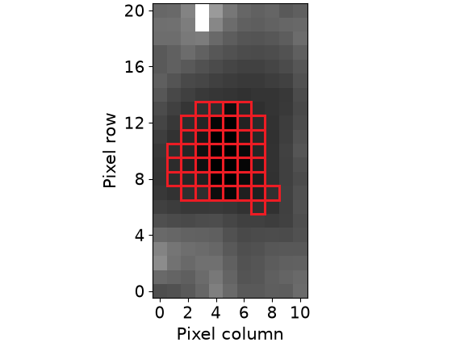
Hình ảnh thu được
- ô ảnh 11 × 21 pixel, camera 4, CCD 2
- khẩu độ 45 pixel chứa 96 % thông lượng tổng
- một sao sáng, không có nguồn thứ hai trong khẩu độ
B5 Phụ lục. BLS trên π Men c tìm thấy 6.27 ngày với S/N 59, cùng các alias yếu hơn ở P/2 và 2P

Hình ảnh thu được
- chu kỳ tốt nhất 6.2709 ngày trên lưới BLS, S/N 59.4
- công suất trung vị 4.45, phân vị 95 là 16.81
- phép khớp tinh chỉnh nó thành 6.26778 ngày
A Phụ lục. Tài liệu, nhóm A đến A (1/19)
| Nhóm, năm, tác giả | Tiêu đề | arXiv or DOI |
|---|---|---|
| A 2010 Jenkins | Overview of the Kepler Science Processing Pipeline | 1001.0258 |
| A 2012 Smith | Kepler Presearch Data Conditioning II - A Bayesian Approach to Systematic Error Correction | 1203.1383 |
| A 2012 Stumpe | Kepler Presearch Data Conditioning I - Architecture and Algorithms for Error Correction in… | 1203.1382 |
| A 2014 Stumpe | Multiscale Systematic Error Correction via Wavelet-Based Bandsplitting in Kepler Data | doi:10.1086/674989 |
| A 2015 Ricker | The Transiting Exoplanet Survey Satellite | 1406.0151 |
| A 2015 Sullivan | The Transiting Exoplanet Survey Satellite: Simulations of planet detections and… | 1506.03845 |
| A 2018 Barclay | A Revised Exoplanet Yield from the Transiting Exoplanet Survey Satellite (TESS) | 1804.05050 |
| A 2018 Gaia Collaboration | Gaia Data Release 2. Summary of the contents and survey properties | 1804.09365 |
A Phụ lục. Tài liệu, nhóm A đến A (2/19)
| Nhóm, năm, tác giả | Tiêu đề | arXiv or DOI |
|---|---|---|
| A 2018 Oelkers | Precision Light Curves from TESS Full-Frame Images: A Difference Imaging Approach | 1803.02316 |
| A 2018 Stassun | The TESS Input Catalog and Candidate Target List | 1706.00495 |
| A 2018 Twicken | Kepler Data Validation I -- Architecture, Diagnostic Tests, and Data Products for Vetting… | 1803.04526 |
| A 2019 Feinstein | eleanor: An open-source tool for extracting light curves from the TESS Full-Frame Images | 1903.09152 |
| A 2019 Li | Kepler Data Validation II -- Transit Model Fitting and Multiple-Planet Search | 1812.00103 |
| A 2019 Stassun | The Revised TESS Input Catalog and Candidate Target List | 1905.10694 |
| A 2020 Caldwell | TESS Science Processing Operations Center FFI Target List Products | 2011.05495 |
| A 2020 Huang | Photometry of 10 Million Stars from the First Two Years of TESS Full Frame Images | 2011.06459 |
A Phụ lục. Tài liệu, nhóm A đến C (3/19)
| Nhóm, năm, tác giả | Tiêu đề | arXiv or DOI |
|---|---|---|
| A 2021 Guerrero | The TESS Objects of Interest Catalog from the TESS Prime Mission | 2103.12538 |
| B 2005 Kovács | A Trend Filtering Algorithm for wide field variability surveys | astro-ph/0411724 |
| B 2014 Vanderburg | A Technique for Extracting Highly Precise Photometry for the Two-Wheeled Kepler Mission | 1408.3853 |
| B 2016 Aigrain | K2SC: Flexible systematics correction and detrending of K2 light curves using Gaussian… | 1603.09167 |
| B 2017 Foreman-Mackey | Fast and scalable Gaussian process modeling with applications to astronomical time series | 1703.09710 |
| B 2019 Hippke | Wotan: Comprehensive time-series de-trending in Python | 1906.00966 |
| B 2020 Barros | Improving transit characterisation with Gaussian process modelling of stellar variability | 2001.07975 |
| C 2002 Jenkins | Some Tests to Establish Confidence in Planets Discovered by Transit Photometry | doi:10.1086/324143 |
A Phụ lục. Tài liệu, nhóm C đến C (4/19)
| Nhóm, năm, tác giả | Tiêu đề | arXiv or DOI |
|---|---|---|
| C 2002 Kovács | A box-fitting algorithm in the search for periodic transits | astro-ph/0206099 |
| C 2009 Zechmeister | The generalised Lomb-Scargle periodogram. A new formalism for the floating-mean and… | 0901.2573 |
| C 2013 Petigura | A Plateau in the Planet Population Below Twice the Size of Earth | 1304.0460 |
| C 2016 Hartman | VARTOOLS: A Program for Analyzing Astronomical Time-Series Data | 1605.06811 |
| C 2018 Ansdell | Scientific Domain Knowledge Improves Exoplanet Transit Classification with Deep Learning | 1810.13434 |
| C 2018 Pearson | Searching for Exoplanets Using Artificial Intelligence | 1706.04319 |
| C 2018 Shallue | Identifying Exoplanets with Deep Learning: A Five Planet Resonant Chain around Kepler-80… | 1712.05044 |
| C 2018 VanderPlas | Understanding the Lomb-Scargle Periodogram | 1703.09824 |
A Phụ lục. Tài liệu, nhóm C đến D (5/19)
| Nhóm, năm, tác giả | Tiêu đề | arXiv or DOI |
|---|---|---|
| C 2019 Dattilo | Identifying Exoplanets with Deep Learning II: Two New Super-Earths Uncovered by a Neural… | 1903.10507 |
| C 2019 Heller | Transit least-squares survey - I. Discovery and validation of an Earth-sized planet in the… | 1904.00651 |
| C 2019 Hippke | Transit Least Squares: Optimized transit detection algorithm to search for periodic… | 1901.02015 |
| C 2019 Yu | Identifying Exoplanets with Deep Learning III: Automated Triage and Vetting of TESS… | 1904.02726 |
| C 2020 Osborn | Rapid Classification of TESS Planet Candidates with Convolutional Neural Networks | 1902.08544 |
| C 2021 Armstrong | Exoplanet Validation with Machine Learning: 50 new validated Kepler planets | 2008.10516 |
| C 2021 Eisner | Planet Hunters TESS II: Findings from the first two years of TESS | 2011.13944 |
| D 1992 Gelman | Inference from Iterative Simulation Using Multiple Sequences | doi:10.1214/ss/1177011136 (no PDF) |
A Phụ lục. Tài liệu, nhóm D đến D (6/19)
| Nhóm, năm, tác giả | Tiêu đề | arXiv or DOI |
|---|---|---|
| D 2002 Mandel | Analytic Light Curves for Planetary Transit Searches | doi:10.1086/345520 |
| D 2003 Seager | On the Unique Solution of Planet and Star Parameters from an Extrasolar Planet Transit… | astro-ph/0206228 |
| D 2006 Pont | The effect of red noise on planetary transit detection | astro-ph/0608597 |
| D 2008 Carter | Analytic Approximations for Transit Light Curve Observables, Uncertainties, and Covariances | 0805.0238 |
| D 2010 Goodman | Ensemble samplers with affine invariance | doi:10.2140/camcos.2010.5.65 |
| D 2010 Hogg | Data analysis recipes: Fitting a model to data | 1008.4686 |
| D 2010 Kipping | Binning is sinning: morphological light-curve distortions due to finite integration time | 1004.3741 |
| D 2010 Winn | Transits and Occultations | 1001.2010 |
A Phụ lục. Tài liệu, nhóm D đến D (7/19)
| Nhóm, năm, tác giả | Tiêu đề | arXiv or DOI |
|---|---|---|
| D 2013 Eastman | EXOFAST: A fast exoplanetary fitting suite in IDL | 1206.5798 |
| D 2013 Foreman-Mackey | emcee: The MCMC Hammer | 1202.3665 |
| D 2013 Kipping | Efficient, uninformative sampling of limb darkening coefficients for two-parameter laws | 1308.0009 |
| D 2015 Kreidberg | batman: BAsic Transit Model cAlculatioN in Python | 1507.08285 |
| D 2017 Claret | Limb and gravity-darkening coefficients for the TESS satellite at several metallicities,… | 1804.10295 |
| D 2017 Sharma | Markov Chain Monte Carlo Methods for Bayesian Data Analysis in Astronomy | 1706.01629 |
| D 2018 Hogg | Data analysis recipes: Using Markov Chain Monte Carlo | 1710.06068 |
| D 2019 Espinoza | Juliet: a versatile modelling tool for transiting and non-transiting exoplanetary systems | 1812.08549 |
A Phụ lục. Tài liệu, nhóm D đến E (8/19)
| Nhóm, năm, tác giả | Tiêu đề | arXiv or DOI |
|---|---|---|
| D 2020 Agol | Analytic Planetary Transit Light Curves and Derivatives for Stars with Polynomial Limb… | 1908.03222 |
| D 2021 Foreman-Mackey | exoplanet: Gradient-based probabilistic inference for exoplanet data & other astronomical… | 2105.01994 |
| E 2011 Torres | Modeling Kepler transit light curves as false positives: Rejection of blend scenarios for… | 1008.4393 |
| E 2012 Morton | An Efficient Automated Validation Procedure for Exoplanet Transit Candidates | 1206.1568 |
| E 2013 Bryson | Identification of Background False Positives from Kepler Data | 1303.0052 |
| E 2013 Fressin | The false positive rate of Kepler and the occurrence of planets | 1301.0842 |
| E 2016 Morton | FALSE POSITIVE PROBABILITIES FOR ALL KEPLER OBJECTS OF INTEREST: 1284 NEWLY VALIDATED… | doi:10.3847/0004-637x/822/2/86 |
| E 2016 Santerne | SOPHIE velocimetry of Kepler transit candidates XVII. The physical properties of giant… | 1511.00643 |
A Phụ lục. Tài liệu, nhóm E đến F (9/19)
| Nhóm, năm, tác giả | Tiêu đề | arXiv or DOI |
|---|---|---|
| E 2017 Collins | AstroImageJ: Image Processing and Photometric Extraction for Ultra-Precise Astronomical… | 1601.02622 |
| E 2017 Günther | Centroid vetting of transiting planet candidates from the Next Generation Transit Survey | 1707.07978 |
| E 2021 Giacalone | Vetting of 384 TESS Objects of Interest with TRICERATOPS and Statistical Validation of 12… | 2002.00691 |
| F 2008 Dotter | The Dartmouth Stellar Evolution Database | 0804.4473 |
| F 2010 Torres | Accurate masses and radii of normal stars: modern results and applications | 0908.2624 |
| F 2013 Huber | Fundamental Properties of Stars using Asteroseismology from Kepler & CoRoT and… | 1210.0012 |
| F 2015 Dressing | The Occurrence of Potentially Habitable Planets Orbiting M Dwarfs Estimated from the Full… | 1501.01623 |
| F 2015 Mann | How to Constrain Your M Dwarf: measuring effective temperature, bolometric luminosity,… | 1501.01635 |
A Phụ lục. Tài liệu, nhóm F đến G (10/19)
| Nhóm, năm, tác giả | Tiêu đề | arXiv or DOI |
|---|---|---|
| F 2015 Winn | The Occurrence and Architecture of Exoplanetary Systems | 1410.4199 |
| F 2018 Berger | Revised Radii of Kepler Stars and Planets Using Gaia Data Release 2 | 1805.00231 |
| F 2018 Fulton | The California Kepler Survey VII. Precise Planet Radii Leveraging Gaia DR2 Reveal the… | 1805.01453 |
| G 2007 Seager | Mass-Radius Relationships for Solid Exoplanets | 0707.2895 |
| G 2012 Howard | Planet Occurrence within 0.25 AU of Solar-type Stars from Kepler | 1103.2541 |
| G 2013 Owen | Kepler planets: a tale of evaporation | 1303.3899 |
| G 2014 Lopez | The Role of Core Mass in Controlling Evaporation: the Kepler Radius Distribution and the… | 1305.0269 |
| G 2014 Weiss | The Mass-Radius Relation for 65 Exoplanets Smaller than 4 Earth Radii | 1312.0936 |
A Phụ lục. Tài liệu, nhóm G đến G (11/19)
| Nhóm, năm, tác giả | Tiêu đề | arXiv or DOI |
|---|---|---|
| G 2015 Burke | Terrestrial Planet Occurrence Rates for the Kepler GK Dwarf Sample | 1506.04175 |
| G 2015 Rogers | MOST 1.6 EARTH-RADIUS PLANETS ARE NOT ROCKY | doi:10.1088/0004-637x/801/1/41 |
| G 2016 Wolfgang | Probabilistic Mass-Radius Relationship for Sub-Neptune-Sized Planets | 1504.07557 |
| G 2016 Zeng | Mass-Radius Relation for Rocky Planets based on PREM | 1512.08827 |
| G 2017 Chen | Probabilistic Forecasting of the Masses and Radii of Other Worlds | 1603.08614 |
| G 2017 Fulton | The California-Kepler Survey. III. A Gap in the Radius Distribution of Small Planets | 1703.10375 |
| G 2017 Owen | The evaporation valley in the Kepler planets | 1705.10810 |
| G 2018 Petigura | The California-Kepler Survey. IV. Metal-rich Stars Host a Greater Diversity of Planets | 1712.04042 |
A Phụ lục. Tài liệu, nhóm G đến H (12/19)
| Nhóm, năm, tác giả | Tiêu đề | arXiv or DOI |
|---|---|---|
| G 2018 Van Eylen | An asteroseismic view of the radius valley: stripped cores, not born rocky | 1710.05398 |
| G 2019 Gupta | Sculpting the Valley in the Radius Distribution of Small Exoplanets as a by-product of… | 1811.03202 |
| G 2019 Hardegree-Ullman | Scaling K2. I. Revised Parameters for 222,088 K2 Stars and a K2 Planet Radius Valley at 1.9… | doi:10.3847/1538-4365/ab7230 |
| G 2019 Hsu | Occurrence Rates of Planets orbiting FGK Stars: Combining Kepler DR25, Gaia DR2 and… | 1902.01417 |
| G 2019 Zeng | Growth Model Interpretation of Planet Size Distribution | 1906.04253 |
| G 2020 Kunimoto | Searching the Entirety of Kepler Data. II. Occurrence Rate Estimates for FGK Stars | 2004.05296 |
| G 2021 Bryson | The Occurrence of Rocky Habitable Zone Planets Around Solar-Like Stars from Kepler Data | 2010.14812 |
| H 1995 Mayor | A Jupiter-mass companion to a solar-type star | doi:10.1038/378355a0 (no PDF) |
A Phụ lục. Tài liệu, nhóm H đến H (13/19)
| Nhóm, năm, tác giả | Tiêu đề | arXiv or DOI |
|---|---|---|
| H 2000 Charbonneau | Detection of Planetary Transits Across a Sun-like Star | astro-ph/9911436 |
| H 2000 Henry | A Transiting “51 Peg–like” Planet | doi:10.1086/312458 |
| H 2002 Charbonneau | Detection of an Extrasolar Planet Atmosphere | astro-ph/0111544 |
| H 2007 Knutson | A map of the day-night contrast of the extrasolar planet HD 189733b | 0705.0993 |
| H 2010 Borucki | Kepler Planet-Detection Mission: Introduction and First Results | doi:10.1126/science.1185402 |
| H 2013 Batalha | Planetary Candidates Observed by Kepler, III: Analysis of the First 16 Months of Data | 1202.5852 |
| H 2013 Kopparapu | Habitable Zones Around Main-Sequence Stars: New Estimates | 1301.6674 |
| H 2014 Howell | The K2 Mission: Characterization and Early results | 1402.5163 |
A Phụ lục. Tài liệu, nhóm H đến H (14/19)
| Nhóm, năm, tác giả | Tiêu đề | arXiv or DOI |
|---|---|---|
| H 2014 Kreidberg | Clouds in the atmosphere of the super-Earth exoplanet GJ 1214b | 1401.0022 |
| H 2016 Fischer | State of the Field: Extreme Precision Radial Velocities | 1602.07939 |
| H 2016 Sing | A continuum from clear to cloudy hot-Jupiter exoplanets without primordial water depletion | 1512.04341 |
| H 2017 Gillon | Seven temperate terrestrial planets around the nearby ultracool dwarf star TRAPPIST-1 | 1703.01424 |
| H 2018 Gandolfi | TESS's first planet: a super-Earth transiting the naked-eye star $π$ Mensae | 1809.07573 |
| H 2018 Huang | TESS Discovery of a Transiting Super-Earth in the $π$ Mensae System | 1809.05967 |
| H 2018 Kempton | A Framework for Prioritizing the TESS Planetary Candidates Most Amenable to Atmospheric… | 1805.03671 |
| H 2018 Thompson | Planetary Candidates Observed by Kepler. VIII. A Fully Automated Catalog With Measured… | 1710.06758 |
A Phụ lục. Tài liệu, nhóm H đến I (15/19)
| Nhóm, năm, tác giả | Tiêu đề | arXiv or DOI |
|---|---|---|
| H 2019 Dragomir | TESS delivers its first Earth-sized planet and a warm sub-Neptune | 1901.00051 |
| H 2019 Vanderspek | TESS Discovery of an ultra-short-period planet around the nearby M dwarf LHS 3844 | 1809.07242 |
| I 2005 Bouchy | ELODIE metallicity-biased search for transiting Hot Jupiters II. A very hot Jupiter… | astro-ph/0510119 |
| I 2009 Hellier | An orbital period of 0.94 days for the hot-Jupiter planet WASP-18b | doi:10.1038/nature08245 (no PDF) |
| I 2012 Hellier | Seven transiting hot Jupiters from WASP-South, Euler and TRAPPIST: WASP-47b, WASP-55b,… | doi:10.1111/j.1365-2966.2012.21780.x |
| I 2015 Berta-Thompson | A rocky planet transiting a nearby low-mass star | 1511.03550 |
| I 2016 Crossfield | 197 Candidates and 104 Validated Planets in K2's First Five Fields | 1607.05263 |
| I 2018 Malavolta | An ultra-short period rocky super-Earth with a secondary eclipse and a Neptune-like… | 1801.03502 |
A Phụ lục. Tài liệu, nhóm I đến J (16/19)
| Nhóm, năm, tác giả | Tiêu đề | arXiv or DOI |
|---|---|---|
| I 2019 Günther | A super-Earth and two sub-Neptunes transiting the nearby and quiet M dwarf TOI-270 | 1903.06107 |
| I 2019 Newton | TESS Hunt for Young and Maturing Exoplanets (THYME): A Planet in the 45 Myr… | doi:10.3847/2041-8213/ab2988 |
| I 2020 Jenkins | An Ultra-Hot Neptune in the Neptune desert | 2009.12832 |
| I 2020 Pepper | TESS Reveals HD 118203 b to be a Transiting Planet | 1911.05150 |
| I 2020 Plavchan | A planet within the debris disk around the pre-main-sequence star AU Microscopii | 2006.13248 |
| I 2021 Winters | A Second Planet Transiting LTT 1445A and a Determination of the Masses of Both Worlds | 2107.14737 |
| J 2010 Eastman | Achieving better than 1 minute accuracy in the Heliocentric and Barycentric Julian Dates | 1005.4415 |
| J 2019 Shporer | TESS full orbital phase curve of the WASP-18b system | 1811.06020 |
A Phụ lục. Tài liệu, nhóm K đến K (17/19)
| Nhóm, năm, tác giả | Tiêu đề | arXiv or DOI |
|---|---|---|
| K 1984 Borucki | The photometric method of detecting other planetary systems | doi:10.1016/0019-1035(84)90102-7 (no PDF) |
| K 1992 Wolszczan | A planetary system around the millisecond pulsar PSR1257 + 12 | doi:10.1038/355145a0 (no PDF) |
| K 2003 Konacki | An extrasolar planet that transits the disk of its parent star | doi:10.1038/nature01379 (no PDF) |
| K 2004 Alonso | TrES-1: The Transiting Planet of a Bright K0 V Star | doi:10.1086/425256 |
| K 2004 Bakos | Wide‐Field Millimagnitude Photometry with the HAT: A Tool for Extrasolar Planet Detection | doi:10.1086/382735 |
| K 2004 Bond | OGLE 2003-BLG-235/MOA 2003-BLG-53: A planetary microlensing event | astro-ph/0404309 |
| K 2005 Charbonneau | Detection of Thermal Emission from an Extrasolar Planet | astro-ph/0503457 |
| K 2005 Deming | Infrared radiation from an extrasolar planet | astro-ph/0503554 |
A Phụ lục. Tài liệu, nhóm K đến K (18/19)
| Nhóm, năm, tác giả | Tiêu đề | arXiv or DOI |
|---|---|---|
| K 2006 Gardner | The James Webb Space Telescope | astro-ph/0606175 |
| K 2006 Pollacco | The WASP Project and the SuperWASP Cameras | astro-ph/0608454 |
| K 2007 Pepper | The Kilodegree Extremely Little Telescope (KELT): A Small Robotic Telescope for Large-Area… | 0704.0460 |
| K 2008 Barge | Transiting exoplanets from the CoRoT space mission I - CoRoT-Exo-1b: a low-density… | 0803.3202 |
| K 2008 Marois | Direct Imaging of Multiple Planets Orbiting the Star HR 8799 | 0811.2606 |
| K 2008 Nutzman | Design Considerations for a Ground-based Transit Search for Habitable Planets Orbiting M… | 0709.2879 |
| K 2009 Auvergne | The CoRoT satellite in flight : description and performance | 0901.2206 |
| K 2010 Koch | Kepler Mission Design, Realized Photometric Performance, and Early Science | 1001.0268 |
A Phụ lục. Tài liệu, nhóm K đến K (19/19)
| Nhóm, năm, tác giả | Tiêu đề | arXiv or DOI |
|---|---|---|
| K 2011 Borucki | Characteristics of Kepler Planetary Candidates Based on the First Data Set: The Majority… | 1006.2799 |
| K 2014 Rauer | The PLATO 2.0 Mission | 1310.0696 |
| K 2015 Vanderburg | Planetary Candidates from the First Year of the K2 Mission | 1511.07820 |
| K 2021 Benz | The CHEOPS mission | 2009.11633 |
| K 2021 Pepe | ESPRESSO@VLT -- On-sky performance and first results | 2010.00316 |
| K 2023 Ahrer | Early Release Science of the exoplanet WASP-39b with JWST NIRCam | 2211.10489 |